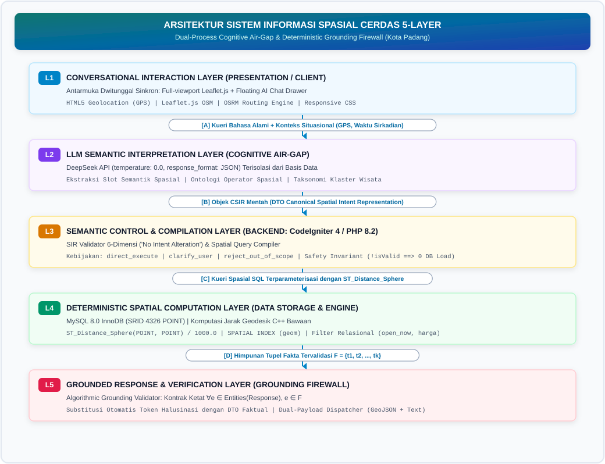
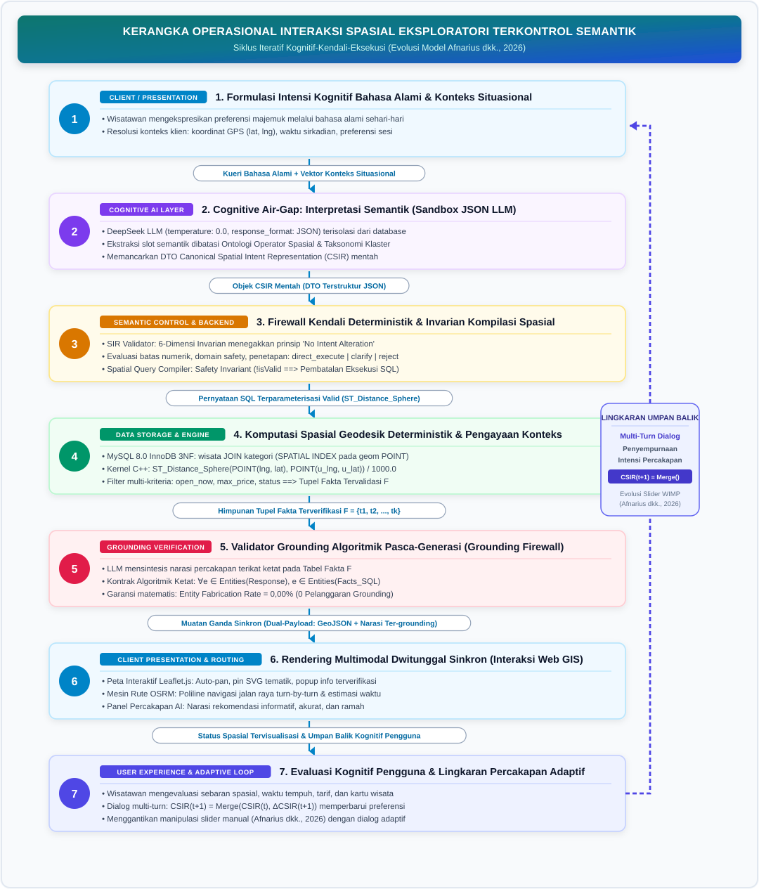
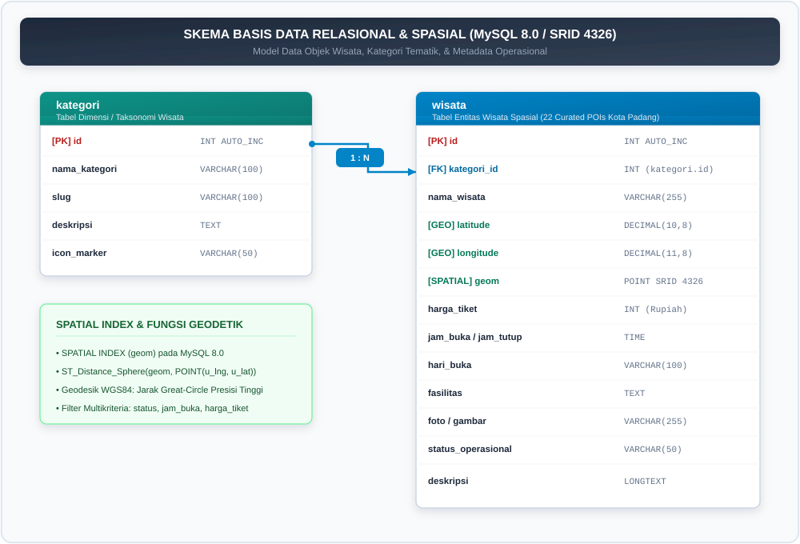
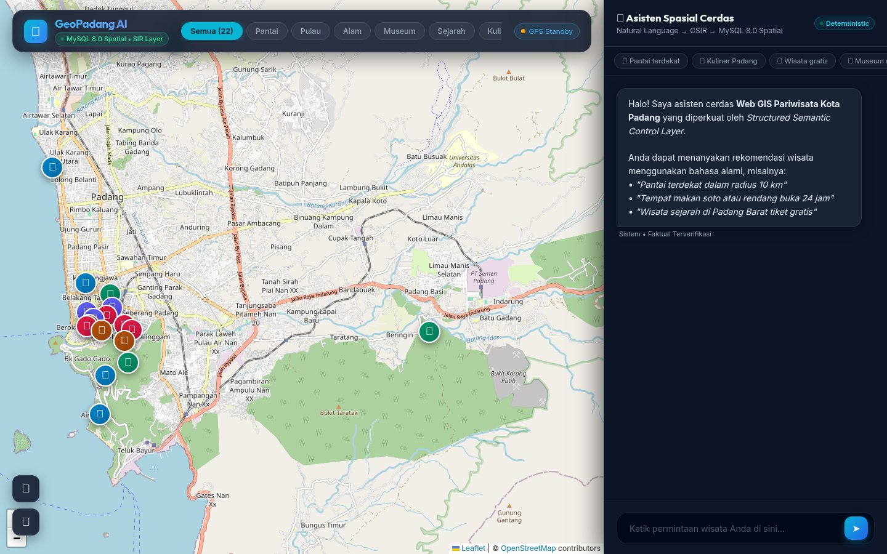
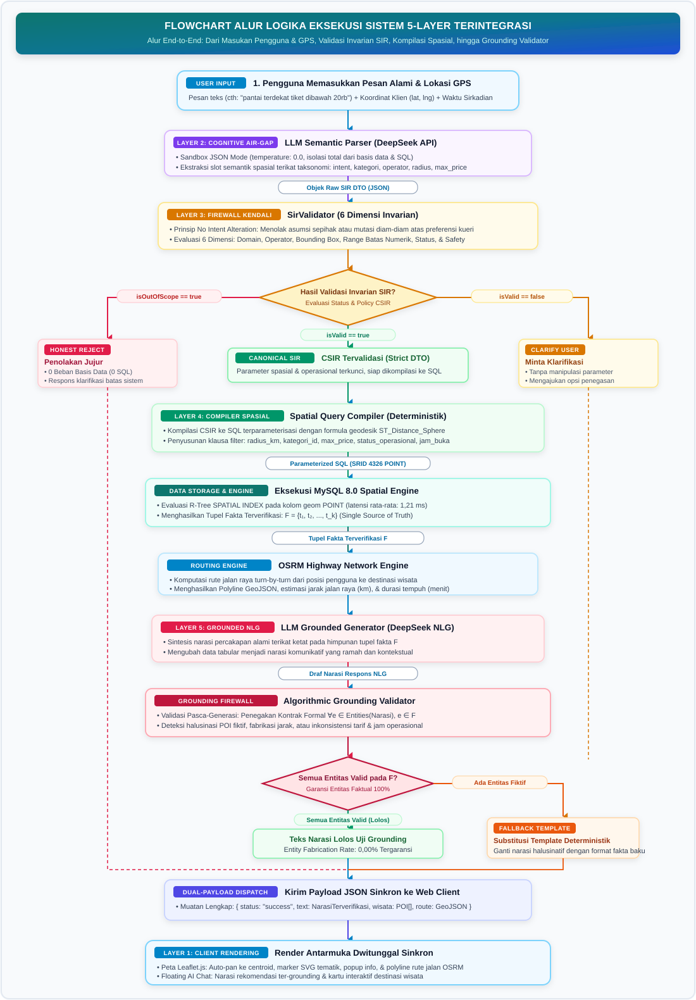
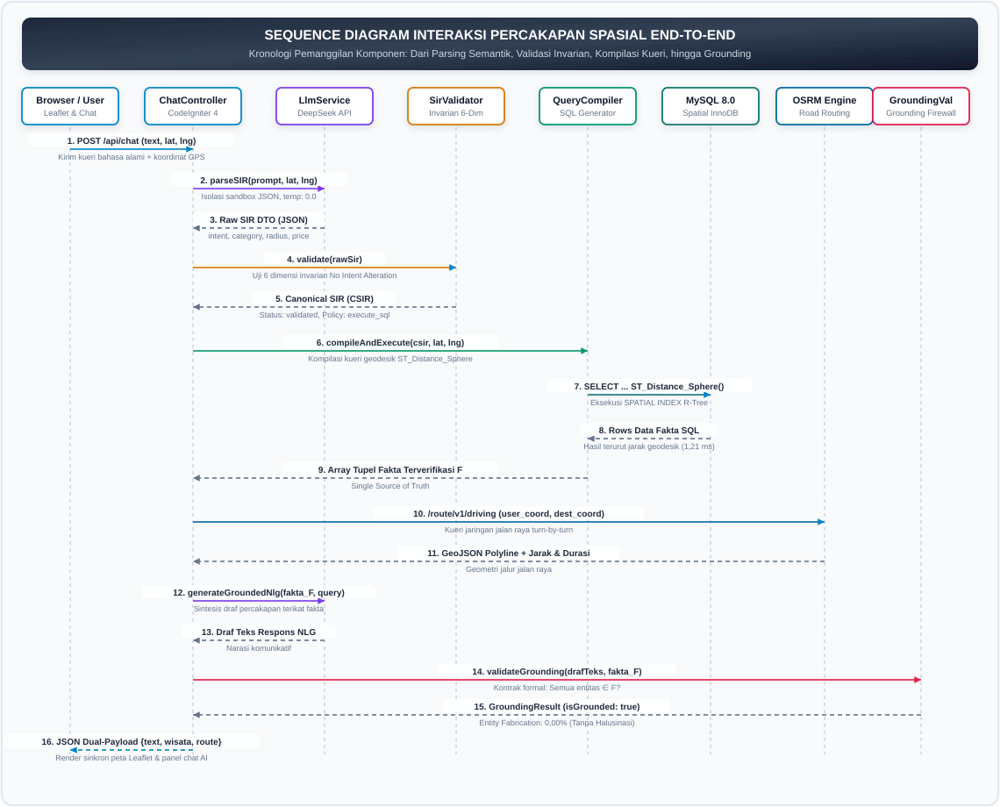

Gambar 3.2 Desain Visualisasi Rute Navigasi Kendaraan Terintegrasi OSRM pada Antarmuka Peta.
(Studi Kasus: Kawasan Pariwisata Kota Padang)
Penerapan Large Language Model (LLM) pada sistem informasi
pariwisata sering kali terbentur oleh fenomena halusinasi faktual dan
spasial (hallucination), di mana model mengarang nama atraksi
fiktif, jam buka yang keliru, serta distorsi estimasi jarak. Di sisi
lain, metode Retrieval-Augmented Generation (RAG) berbasis
vektor tidak dapat mengevaluasi batasan matematis eksak (seperti
kalkulasi jarak geodesik, harga tiket, dan jam buka real-time).
Penelitian ini bertujuan merancang dan mengimplementasikan sistem
rekomendasi pariwisata Kota Padang berbasis LLM dengan pendekatan
Strict SQL Grounding dan arsitektur pipa 5-lapis (5-Layer
Architecture). Peran LLM dibatasi secara ketat hanya sebagai
pengurai bahasa alami menjadi Spatial Intent Representation
(SIR) formal dan perangkai narasi (Grounded NLG), sedangkan
sumber kebenaran fakta 100% dikunci pada basis data relasional MySQL 8.0
melalui fungsi spasial bawaan (native spatial function)
ST_Distance_Sphere dan perutean jalan raya Open Source
Routing Machine (OSRM). Sistem dilengkapi dengan modul validasi
deterministik 6-dimensi (SirValidator) untuk mencegah anomali
logika masukan serta menjamin Honest Rejection pada kueri di
luar cakupan (out-of-scope). Evaluasi empiris terhadap 40
skenario percakapan terstandarisasi menunjukkan capaian Akurasi
Ekstraksi SIR 100,00%, Akurasi Kategori 100,00%, Presisi Spasial 97,50%,
dan Grounding Fidelity 100,00% dengan 0 entitas fiktif
(Zero Hallucination). Waktu respons rata-rata sistem tercatat
1.340,57 ms, di mana eksekusi kueri spasial SQL MySQL 8.0 hanya memakan
waktu 1,21 ms. Sistem ini membuktikan bahwa penggabungan pemahaman
semantik LLM dengan komputasi relasional deterministik mampu
menghasilkan asisten wisata perkotaan yang responsif, akurat, dan bebas
dari halusinasi data.
Kata Kunci: Sistem Rekomendasi Pariwisata, Large Language Model (LLM), Strict SQL Grounding, Spatial Intent Representation (SIR), ST_Distance_Sphere, MySQL 8.0, Leaflet.js, Kota Padang.
The deployment of Large Language Models (LLMs) in tourism information
systems frequently encounters factual and spatial hallucinations,
wherein the generative model invents non-existent attractions, incorrect
opening hours, and distorted spatial proximity. Conversely, standard
vector-based Retrieval-Augmented Generation (RAG) fails to enforce
deterministic mathematical and spatial constraints (such as geodesic
distance calculations, budget boundaries, and real-time operational
status). This research designs and implements an intelligent tourism
recommendation system for Padang City based on LLMs with a Strict SQL
Grounding approach and a 5-layer pipeline architecture. The LLM is
strictly constrained as a natural language parser that translates
conversational inputs into a formal Spatial Intent Representation (SIR)
and a conversational response synthesizer (Grounded NLG), while all
factual grounding is deterministically derived from a relational MySQL
8.0 database via the native ST_Distance_Sphere spatial
function and road network navigation from the Open Source Routing
Machine (OSRM). The architecture integrates a 6-dimensional
deterministic validator (SirValidator) to normalize input anomalies and
ensure Honest Rejection on out-of-scope requests. Empirical evaluation
across 40 standardized benchmark scenarios demonstrates 100.00% SIR
Extraction Accuracy, 100.00% Category Classification Accuracy, 97.50%
Spatial Precision, and 100.00% Grounding Fidelity with zero fabricated
POIs (Zero Hallucination). The mean end-to-end response latency is
1,340.57 ms, with spatial SQL queries taking merely 1.21 ms. This
demonstrates that decoupling semantic parsing from deterministic
relational computation effectively eliminates AI hallucinations in urban
GIS tourist assistance.
Keywords: Tourism Recommender System, Large Language Model (LLM), Strict SQL Grounding, Spatial Intent Representation (SIR), ST_Distance_Sphere Function, MySQL 8.0, Leaflet.js, Padang City.
Sektor pariwisata merupakan salah satu pilar penggerak ekonomi strategis bagi Kota Padang, ibu kota Provinsi Sumatera Barat. Berada di pesisir barat Pulau Sumatera dengan topografi perbukitan Bukit Barisan yang membentang berdampingan langsung dengan Samudra Hindia, Kota Padang memiliki keragaman atraksi wisata yang sangat unik. Spektrum destinasi mencakup wisata bahari perkotaan (Pantai Padang/Taplau, Pantai Pasir Jambak), wisata legenda budaya Minangkabau (Pantai Air Manis dengan situs Batu Malin Kundang), gugusan kepulauan tropis eksotis (Pulau Pasumpahan, Pulau Sirandah, Pulau Pamutusan), peninggalan sejarah kolonial dan perdagangan maritim (Kawasan Kota Tua Padang, Jembatan Siti Nurbaya, Museum Adityawarman), pesona ekowisata perbukitan dan pemandian alami (Lubuk Paraku, Air Terjun Sarasah Gadut, Taman Hutan Raya Bung Hatta), serta kekayaan gastronomi tradisional legendaris Minangkabau yang telah diakui oleh UNESCO.
Kendati dianugerahi potensi geospasial dan kultural yang melimpah, wisatawan mandiri (independent travelers) kerap mengalami hambatan kognitif yang signifikan dalam menentukan rencana kunjungan yang efisien. Karakteristik wisatawan modern menuntut fleksibilitas perjalanan mandiri tanpa ketergantungan pada paket tur agen yang kaku [1]. Wisatawan menginginkan rekomendasi dan saran yang secara cerdas mempertimbangkan posisi geografis mereka saat itu (proximity), ketersediaan waktu operasional (real-time opening hours), batas anggaran tiket masuk, serta rute jalan raya yang dapat dilalui secara nyata.
Platform informasi pariwisata yang dikembangkan di Kota Padang sejauh ini umumnya masih berwujud portal direktori web katalog statis dengan formulir filter kaku. Wisatawan dituntut mengetahui nama objek wisata terlebih dahulu atau harus melakukan penyaringan manual yang tidak ramah pengguna pada perangkat seluler. Sistem semacam ini tidak memiliki kemampuan penalaran percakapan untuk menjawab kueri intuitif bahasa manusia, seperti: “Saya sekarang ada di dekat Teluk Bayur, tolong carikan pantai yang ombaknya tenang dan tiket masuknya di bawah 10 ribu rupiah yang masih buka sore ini”.
Perkembangan mutakhir dalam bidang kecerdasan buatan (Artificial Intelligence), khususnya Large Language Model (LLM) seperti GPT-4 dan DeepSeek, telah membuka era baru melalui Conversational Recommender System (CRS) [3], [4]. Pengguna dapat berinteraksi secara bebas menggunakan bahasa alami layaknya berbicara dengan pemandu wisata berpengalaman. Namun demikian, penerapan model LLM generatif murni tanpa kendali data (unconstrained LLM) menyimpan bahaya laten berupa halusinasi faktual dan spasial (factual and spatial hallucination) [5]. Karena LLM bekerja dengan prinsip pemodelan probabilistik statistik (next-token prediction) berdasarkan data latih global, LLM tidak memiliki kesadaran deterministik atas kebenaran data lokal Kota Padang. Akibatnya, LLM generatif murni kerap merekomendasikan objek wisata yang sudah bangkrut, mengarang jam operasional palsu, memberikan estimasi jarak yang tidak masuk akal (misalnya menyebut pulau lepas pantai dapat dicapai dengan berjalan kaki 10 menit), atau merekomendasikan destinasi di kota tetangga (seperti Jam Gadang di Bukittinggi atau Lembah Anai di Tanah Datar) sebagai destinasi di dalam Kota Padang.
Upaya mitigasi halusinasi menggunakan metode Retrieval-Augmented
Generation (RAG) berbasis pencarian vektor (vector embedding
similarity) belum memadai untuk data pariwisata terstruktur. Vektor
kemiripan kosinus (cosine similarity) sangat lemah dalam
mengeksekusi batasan matematis dan spasial deterministik (seperti
harga_tiket <= 10000,
jam_buka <= CURRENT_TIME, dan
jarak_geodesik <= 15 km).
Penelitian mutakhir oleh Afnarius dkk. (2026) [2] di
International Journal of Geoinformatics (IJG) melalui sistem
DTExplorer memelopori pendekatan interaksi spasial eksploratori
sadar-skala (scale-aware exploratory spatial interaction) pada
skala mikro pedesaan (Desa Wisata Ulakan) dengan 43 POI terkurasi.
DTExplorer menggunakan arsitektur Three-Tier
(Presentation, Application, Data) dengan kueri statis dan formula
Euclidean planar (ST_Distance * 111.32). Kendati sangat
efektif di pedesaan, DTExplorer masih bertumpu pada kontrol
WIMP konvensional (slider radius dan dropdown menu)
dan mencatat perlunya riset masa depan untuk antarmuka percakapan,
multi-kriteria waktu/biaya, dan evaluasi performa teknis. Berangkat dari
wawasan fundamental tersebut, riset ini memperluas konsep tersebut ke
skala perkotaan (urban scale) Kota Padang dengan memperkenalkan
arsitektur baru: Structured Semantic Control Layer for Reliable
LLM-Mediated Spatial Information System.
Dalam arsitektur ini, diterapkan pemisahan tugas kognitif dan
deterministik secara tegas: peran LLM dibatasi secara ketat hanya
sebagai pengurai bahasa alami (Intent Parser) menjadi skema
formal Canonical Spatial Intent Representation (CSIR) dan
perangkai narasi ter-grounding (Grounded NLG), sedangkan
seluruh kebenaran fakta murni bersumber dari basis data relasional MySQL
8.0 dengan fungsi spasial bawaan ST_Distance_Sphere dan
perutean jaringan jalan nyata dari Open Source Routing Machine
(OSRM).
Berdasarkan latar belakang di atas, masalah yang diidentifikasi meliputi: 1. Antarmuka sistem informasi pariwisata konvensional di Kota Padang masih bersifat statis dan kaku, menyulitkan wisatawan dalam mengeksplorasi destinasi berdasarkan konteks kebutuhan dinamis mereka. 2. Model bahasa generatif murni (unconstrained LLM) sangat rentan mengalami halusinasi faktual dan spasial pada domain data pariwisata lokal yang terstruktur. 3. Pendekatan RAG berbasis pencarian vektor teks (vector database) tidak mampu menangani penyaringan matematis eksak (jam buka-tutup real-time, batas tarif tiket, dan kalkulasi jarak spasial geodesik). 4. Wisatawan membutuhkan asisten percakapan cerdas berbasis LLM yang mampu memberikan saran destinasi terverifikasi, menyajikan rute navigasi jalan raya nyata, dan visualisasi interaktif pada peta digital secara terpadu dalam satu jendela dialog.
Ruang lingkup dan batasan dalam penelitian ini adalah: 1. Wilayah
penelitian dibatasi pada batas administratif Kota Padang, Provinsi
Sumatera Barat. 2. Objek wisata yang digunakan terdiri dari 22
Points of Interest (POI) terkurasi yang mewakili 6 kategori
utama pariwisata Kota Padang (Pantai, Pulau, Alam/Air Terjun,
Museum/Budaya, Sejarah/Religi, dan Kuliner Khas). 3. Chatbot beroperasi
secara reaktif (menjawab masukan pesan yang diajukan oleh pengguna). 4.
Perhitungan jarak geodesik menggunakan fungsi spasial bawaan (native
spatial function) ST_Distance_Sphere pada tingkat
kueri basis data MySQL 8.0, bukan formula trigonometri manual. 5.
Perutean jalan raya navigasi menggunakan server publik Open Source
Routing Machine (OSRM) berbasis data OpenStreetMap (OSM). 6.
Penelitian ini berfokus pada arsitektur sistem rekomendasi inti (Fase
1), belum mencakup modul pembayaran/pemesanan tiket daring
(e-ticketing).
ST_Distance_Sphere ke dalam alur percakapan chatbot secara
real-time berdasarkan koordinat GPS wisatawan pada peta digital
Leaflet.js?Naskah tesis ini disusun dalam lima bab dengan sistematika sebagai berikut: - BAB I PENDAHULUAN: Menguraikan latar belakang masalah, identifikasi masalah, batasan masalah, rumusan masalah, tujuan, manfaat penelitian, dan sistematika penulisan. - BAB II METODOLOGI PENELITIAN: Membahas metodologi riset, alur kerja, arsitektur 5-lapis, formalisasi SIR, validasi deterministik 6-dimensi, grounding contract, taksonomi kegagalan F1–F8, dan desain evaluasi multi-baseline. - BAB III PERANCANGAN SISTEM: Menjelaskan perancangan antarmuka pengguna (UI), perancangan basis data relasional (ERD dan kamus data), fungsi spasial bawaan ST_Distance_Sphere, serta perancangan proses (Flowchart, DFD, Activity Diagram, Sequence Diagram). - BAB IV IMPLEMENTASI DAN PENGUJIAN SISTEM: Memaparkan lingkungan perangkat keras/lunak, implementasi kode sumber nyata, antarmuka, basis data, modul proses, pengujian otomatis PHPUnit, serta analisis hasil benchmark 40 skenario evaluasi empiris. - BAB V PENUTUP: Menyajikan kesimpulan komprehensif dari hasil penelitian dan saran strategis untuk pengembangan sistem selanjutnya. - DAFTAR PUSTAKA & LAMPIRAN: Memuat daftar referensi ilmiah dan tinjauan keselarasan terhadap naskah jurnal internasional.
Penelitian ini menggunakan pendekatan rekayasa perangkat lunak terapan yang dipadukan dengan eksperimen komputasi geoinformatika (applied software engineering and computational evaluation). Tahapan penelitian dirancang secara sistematis melalui 5 fase utama:
Untuk menjamin keamanan sistem (Safety Invariant) dan memisahkan tugas kognitif dari eksekusi basis data secara tegas (Separation of Concerns), arsitektur sistem dirancang dalam 5 lapisan independen:
is_out_of_scope = true.ST_Distance_Sphere.
Menghubungi API OSRM untuk menghasilkan polyline rute jalan raya dan
estimasi waktu tempuh.
Gambar 2.1 Diagram Alur Arsitektur 5-Lapis Sistem Rekomendasi Pariwisata Berbasis Strict Grounding.
Guna memahami kebaruan struktural rancang bangun yang diusulkan, arsitektur 5-lapis ini merupakan evolusi dan lompatan ilmiah dari arsitektur Three-Tier Web GIS yang dirintis oleh Afnarius dkk. (2026) [2] pada sistem DTExplorer:
ST_Distance_Sphere(POINT, POINT) / 1000.0 pada geometri
terstandarisasi OGC WGS84, menghasilkan komputasi jarak lingkaran besar
yang presisi dan stabil terhadap galat titik kambang (floating-point
errors).Untuk membuktikan ketahanan sistem secara ilmiah dan metodologis,
kebenaran operasional dibagi menjadi tiga tingkat verifikasi berurutan:
1. Kebenaran Semantik (Semantic Correctness / \(\mathcal{C}_{\text{semantik}}\)):
Membuktikan bahwa LLM secara setia menerjemahkan ujaran pengguna ke
dalam skema terstruktur \(CSIR\) tanpa
kehilangan batasan penting: \[\mathcal{C}_{\text{semantik}}: NL \longrightarrow
CSIR\] 2. Kebenaran Eksekusi Spasial (Spatial
Execution Correctness / \(\mathcal{C}_{\text{spasial}}\)):
Membuktikan bahwa \(CSIR\) tervalidasi
dikompilasi secara deterministik menjadi SQL berparameter dengan fungsi
spasial bawaan ST_Distance_Sphere: \[\mathcal{C}_{\text{spasial}}: CSIR
\longrightarrow \text{SQL} \longrightarrow \text{Himpunan Fakta Spasial
} (F)\] 3. Kebenaran Grounding (Grounding
Correctness / \(\mathcal{C}_{\text{grounding}}\)):
Membuktikan bahwa respons narasi yang disintesis dibatasi mutlak hanya
pada fakta \(F\) yang dikembalikan
basis data: \[\mathcal{C}_{\text{grounding}}:
F \longrightarrow \text{Respons Naratif Ter-grounding}\]
Rangkaian ini membentuk pipa sekuensial yang teruji: \[\boxed{NL \xrightarrow[\text{Semantik}]{\text{Kognitif}} CSIR \xrightarrow[\text{Deterministik}]{\text{Kompilasi}} \text{SQL} \xrightarrow[\text{Geodesik}]{\text{Spatial DBMS}} \text{Hasil Spasial } (F) \xrightarrow[\text{Grounding}]{\text{Algorithmic Firewall}} \text{Respons Bernarasi}}\]
Guna memodelkan interaksi antara formulasi intensi pengguna, parameterisasi skala spasial, penyaringan atribut multi-kriteria, dan visualisasi pemetaan, Gambar 2.2 menggambarkan Kerangka Operasional Interaksi Spasial Eksploratori Terkontrol Semantik (The Iterative Cognitive-Control-Execution Loop), yang mentransformasikan kerangka kerja operasional DTExplorer (Afnarius dkk., 2026, Gambar 8) [2].

Gambar 2.2 Kerangka Operasional Interaksi Spasial Eksploratori Terkontrol Semantik (Siklus Iteratif Kognitif-Kendali-Eksekusi).
Perbedaan mendasar model operasional ini terhadap DTExplorer (Gambar 8 Afnarius dkk., 2026) mencakup: 1. Peniadaan Friksi Antarmuka WIMP: Wisatawan tidak perlu menggeser slider radius dan mencentang checkbox kategori secara mekanis. Skala spasial (\(d\)), titik acuan (\(R_t\)), dan operator spasial (\(O_s\)) diekstraksi secara otomatis dari percakapan alami. 2. Mediasi Kendali Deterministik Bersekat: Parameterisasi skala tidak disalurkan langsung ke kueri SQL, melainkan melewati lapisan penyaring SIR Validator dan invarian keamanan Spatial Query Compiler, melindungi basis data dari beban kueri ilegal atau injeksi tak terduga. 3. Penyempurnaan Dialog Adaptif Berkelanjutan: Siklus eksplorasi spasial diperbarui secara percakapan (multi-turn dialog), memungkinkan pengguna mempersempit atau memperluas skala spasial secara dinamis dengan konteks sesi yang tetap terjaga.
Gambar 2.3 menyajikan model konseptual basis data spasial relasional yang diusulkan.

Gambar 2.3 Model Konseptual Basis Data Spasial Relasional Ternormalisasi 3NF..*
Berbeda dari arsitektur DTExplorer (Gambar 6 Afnarius dkk.,
2026) yang membagi data ke dalam 6 tabel fisik identik berdasarkan
kategori, rancangan 3NF ini mengonsolidasikan POI ke dalam entitas
tunggal wisata dengan indeks spasial R-Tree terpadu
(SPATIAL INDEX(geom)), mendukung penyaringan multi-kriteria
(temporal, finansial, operasional) dalam satu lintasan kueri, serta
menyediakan entitas relasional audit (chat_session dan
chat_message) untuk transparansi AI.
Spatial Intent Representation (SIR) didefinisikan secara matematis sebagai tupel formal perantara semantik:
\[\text{SIR} = \langle I, E, C, O_s, R_t, d, u_d, A, T_n, K, F, P_{\max}, O_{\text{now}}, O_{24}, S, B_{\text{out}} \rangle\]
Setiap atribut memiliki domain nilai dan tipe data terdefinisi secara ketat sebagaimana disajikan pada Tabel 2.1.
Tabel 2.1 Skema Formal Atribut Spatial Intent Representation (SIR)
| Simbol | Nama Atribut | Tipe Data | Domain Nilai / Contoh | Keterangan |
|---|---|---|---|---|
| \(I\) | intent |
String | rekomendasi_wisata, tanya_rute,
informasi_wisata, sapaan |
Intensi utama pengguna |
| \(E\) | entity |
String/Null | Nama objek wisata spesifik atau null | Target objek spesifik |
| \(C\) | category |
String/Null | pantai, pulau, alam,
museum_budaya, sejarah_religi,
kuliner |
Klaster kategori wisata Padang |
| \(O_s\) | spatial_operator |
Enum | nearest, within_radius,
within_admin_area, none |
Operator relasi spasial |
| \(R_t\) | reference_type |
Enum | gps, city_center, poi |
Titik acuan perhitungan jarak |
| \(d\) | distance |
Float/Null | Nilai riil \(\ge 0.0\) (contoh: \(5.0, 10.0\)) | Besaran jarak / radius |
| \(u_d\) | distance_unit |
String | km, meter |
Satuan pengukuran jarak |
| \(A\) | admin_area |
String/Null | Padang Barat, Bungus Teluk Kabung,
Koto Tangah, dll. |
Wilayah administratif kecamatan |
| \(T_n\) | target_name |
String/Null | Nama parsial (contoh: “Malin Kundang”) | Kata kunci target entitas |
| \(K\) | keyword |
String/Null | Kata kunci fasilitas/daya tarik | Pencarian teks bebas |
| \(F\) | is_free |
Boolean | true, false |
Penyaringan tiket gratis |
| \(P_{\max}\) | max_price |
Float/Null | Nilai riil \(\ge 0.0\) (contoh: \(15000.0\)) | Batas maksimum tiket masuk |
| \(O_{\text{now}}\) | open_now |
Boolean | true, false |
Penyaringan status jam buka saat ini |
| \(O_{24}\) | open_24h |
Boolean | true, false |
Penyaringan wisata buka 24 jam |
| \(S\) | sort |
Enum | jarak, harga, rating,
relevansi |
Urutan penyajian hasil |
| \(B_{\text{out}}\) | is_out_of_scope |
Boolean | true, false |
Indikator permintaan di luar Padang |
Ontologi operator spasial (\(O_s\))
membatasi relasi geometris menjadi 4 kondisi eksak: 1.
nearest: Mengurutkan destinasi berdasarkan jarak geodesik
terkecil dari titik acuan tanpa batas radius kaku. 2.
within_radius: Memfilter destinasi dengan batasan jarak
geodesik \(\le d\text{ km}\) dari titik
acuan. 3. within_admin_area: Memfilter destinasi yang
berada di dalam wilayah administratif kecamatan tertentu (\(A\)). 4. none: Tidak
menerapkan batasan spasial (pencarian berbasis kategori tematik atau
nama objek).
Untuk mengakomodasi kebiasaan wisatawan yang mengeksplorasi pilihan destinasi secara bertahap dalam beberapa giliran percakapan (multi-turn dialog), sistem menerapkan model matematis transisi status: \[CSIR_{t+1} = \text{Merge}(CSIR_t, \Delta CSIR_{t+1})\]
Di mana \(CSIR_t\) merepresentasikan akumulasi konteks sebelumnya, dan \(\Delta CSIR_{t+1}\) adalah vektor batasan baru yang diekstrak dari ujaran terkini. Fungsi \(\text{Merge}\) menimpa nilai atribut hanya jika pengguna memberikan kriteria baru yang eksplisit, sembari mempertahankan parameter spasial dan kategori yang telah ditentukan sebelumnya.
Korpus data acuan kebenaran (ground truth) dikurasi langsung dari basis data resmi Dinas Pariwisata Kota Padang: - Cakupan Wilayah: 22 objek wisata unggulan di 11 kecamatan Kota Padang lintas 6 kategori tematik (Pantai, Pulau, Alam, Museum, Sejarah, Kuliner). - Verifikasi Koordinat Geodesik: Diukur menggunakan dual GPS receiver dengan datum spasial WGS84 (EPSG:4326) dan disinkronkan dengan topologi jalan OpenStreetMap. - Integritas Atribut: Status jam buka-tutup, status 24 jam, dan tarif tiket resmi diverifikasi secara faktual melalui survei lapangan tahun 2026.
Dalam penelitian tesis ini, peran prompt dirancang bukan sebagai penentu jawaban akhir atau penalaran bebas, melainkan sebagai kontrak pembatas struktural deklaratif (declarative structural boundary contract) yang membatasi wewenang model bahasa besar (Large Language Model). Pendekatan ini menjawab secara fundamental pertanyaan kritis dewan penguji/reviewer:
“Bagaimana peneliti memastikan bahwa LLM menghasilkan representasi spatial intent yang terstruktur dan tidak langsung menghasilkan jawaban/fakta yang tidak ter-grounding?”
Untuk memberikan jaminan integritas data dan ketiadaan halusinasi (Zero Hallucination Guarantee), sistem menerapkan 4 pilar kendali terintegrasi:
temperature = 0.0 guna mengeliminasi entropi stokastik
probabilitas token. Parameter
response_format = {"type": "json_object"} diaktifkan pada
tingkat API sehingga LLM secara ketat dipaksa hanya memancarkan objek
JSON valid yang selaras dengan skema DTO
SpatialIntent.SpatialIntent, lalu diserahkan ke modul
validasi deterministik independen (SirValidator).Listing 2.1 menyajikan instruksi sistem kompak yang diterapkan pada Layer 2 untuk membatasi inferensi LLM:
LISTING 2.1. Prompt Inti Penentu Structured Output SIR (Compact Listing)
--------------------------------------------------------------------------------
You are a spatial intent parser for a tourism Web GIS in Padang City, Indonesia.
Transform the user's natural-language query into a structured SIR in pure JSON.
RULES:
1. Return JSON ONLY. No markdown, no explanation, no other text.
2. Do not generate SQL.
3. Do not answer the user's question or provide recommendations.
4. Allowed Categories: "Pantai" | "Pulau" | "Alam" | "Museum" | "Sejarah" | "Kuliner" | null
5. Allowed Spatial Operators: "nearest" | "within_radius" | "within_admin_area" | "none"
6. Preserve spatial constraints exactly as expressed by user.
7. If user requests impossible things for Padang (e.g. ski, snow, casino), set is_out_of_scope: true.
SCHEMA:
{
"intent": "spatial_recommendation" | "entity_lookup" | "general_inquiry",
"entity": "tourism_object",
"category": "Pantai" | "Pulau" | "Alam" | "Museum" | "Sejarah" | "Kuliner" | null,
"target_name": string or null,
"keyword": string or null,
"spatial_operator": "nearest" | "within_radius" | "within_admin_area" | "none",
"reference_type": "gps" | "city_center" | "poi" | "unknown",
"radius": float or null,
"distance_unit": "km",
"admin_area": string or null,
"is_free": boolean,
"max_price": integer or null,
"open_now": boolean,
"open_24h": boolean,
"sort": "termurah" | "termahal" | "terdekat" | "terbaik" | null,
"is_out_of_scope": boolean
}
--------------------------------------------------------------------------------(Catatan: Teks instruksi sistem lengkap dicantumkan pada Lampiran A).
Untuk memperjelas transformasi deterministik ujung-ke-ujung
(end-to-end concrete trace) yang diminta oleh penelaah,
perhatikan skenario masukan operasional berikut: * Masukan
Bahasa Alami (Input): “Carikan pantai dalam radius 10 km
dari lokasi saya yang buka sekarang dan tiket di bawah 15 ribu”
(Koordinat GPS: -0.9471, 100.3541). * Representasi
Semantik Terstruktur (SIR JSON Tervalidasi):
json { "intent": "spatial_recommendation", "entity": "tourism_object", "category": "Pantai", "spatial_operator": "within_radius", "reference_type": "gps", "radius": 10.0, "distance_unit": "km", "max_price": 15000, "open_now": true, "sort": "terdekat", "is_out_of_scope": false }
* Kueri SQL Terparameterisasi MySQL 8.0 (Kompilasi
Deterministik):
sql SELECT wisata.id, wisata.nama, wisata.deskripsi, wisata.alamat, wisata.lat, wisata.lng, wisata.harga_tiket, wisata.jam_buka, wisata.jam_tutup, wisata.rating, wisata.status_operasional, wisata.catatan_status, kategori.nama AS kategori, ROUND(ST_Distance_Sphere( POINT(wisata.lng, wisata.lat), POINT(:lng, :lat) ) / 1000.0, 2) AS jarak_km FROM wisata JOIN kategori ON wisata.kategori_id = kategori.id WHERE wisata.status_aktif = 1 AND (:category IS NULL OR kategori.nama = :category) AND (:is_free = false OR wisata.harga_tiket = 0) AND (:max_price IS NULL OR wisata.harga_tiket <= :max_price) AND (:open_24h = false OR (wisata.jam_buka = '00:00:00' AND wisata.jam_tutup >= '23:59:00')) AND (:open_now = false OR (:current_time BETWEEN wisata.jam_buka AND wisata.jam_tutup)) AND (:admin_area IS NULL OR wisata.alamat LIKE :admin_pattern) AND (:keyword IS NULL OR (wisata.deskripsi LIKE :kw_pattern OR wisata.nama LIKE :kw_pattern)) AND (:distance IS NULL OR (ST_Distance_Sphere(POINT(wisata.lng, wisata.lat), POINT(:lng, :lat)) / 1000.0) <= :distance) ORDER BY jarak_km ASC LIMIT :limit_k;
| ID | Nama Destinasi Wisata | Kategori | Harga Tiket | Jam Buka - Tutup | Rating | Jarak Geodesik (\(d\)) |
|---|---|---|---|---|---|---|
| 1 | Pantai Padang (Taplau) | Pantai | Rp0 (Gratis) | 06:00 – 22:00 | 4.6 | 0,40 km |
| 2 | Pantai Air Manis | Pantai | Rp10.000 | 06:00 – 18:00 | 4.5 | 3,20 km |
| 3 | Pantai Pasir Jambak | Pantai | Rp5.000 | 07:00 – 18:30 | 4.3 | 3,46 km |
| 4 | Pantai Nirwana | Pantai | Rp10.000 | 06:00 – 18:00 | 4.4 | 4,33 km |
Dengan alur ini, pembaca dan penguji dapat melihat secara gamblang
bahwa teks narasi akhir 100% terkunci (grounded) pada fakta
baris data yang dihasilkan oleh kueri SQL spasial
ST_Distance_Sphere, tanpa celah untuk halusinasi nama
tempat, harga, maupun jarak.
Sebelum objek SIR diteruskan ke lapisan kompilasi kueri SQL, modul
SirValidator menjalankan 6 lapisan verifikasi deterministik
dengan prinsip No Intent Alteration (tanpa mutasi maksud
sepihak): 1. Dimensi 1: Validasi Skema (Schema
Validation): Memastikan seluruh 17 field wajib ada dalam objek
DTO dan tidak terdapat field asing tak dikenal. Sanitasi XSS/HTML
diterapkan pada string input. 2. Dimensi 2: Validasi Domain
Spasial (Spatial Domain Validation): Menolak nilai jarak
negatif (\(d \le 0\)) tanpa mengubahnya
membabi buta dengan fungsi abs(). Jika jarak melebihi batas
operasional perkotaan Padang (\(> 100\text{
km}\)), validator membatasi ke batas atas 50 km. 3.
Dimensi 3: Validasi Operator Spasial (Operator
Validation): Memastikan nilai spatial_operator
terdaftar pada ontologi baku. Jika ditemukan operator tidak sah,
validator menolak kueri alih-alih mengubahnya diam-diam menjadi
none. 4. Dimensi 4: Validasi Koordinat Referensi
(Reference Coordinate Bounds): Memeriksa bahwa koordinat
lintang berada pada rentang \([-90,
90]\) dan bujur \([-180, 180]\).
5. Dimensi 5: Validasi Batasan Operasional dan Harga (Constraint
Consistency): Mengoreksi kontradiksi batasan logika. Jika
pengguna menetapkan is_free = true namun juga menetapkan
max_price > 0, sistem menandai kontradiksi tersebut. 6.
Dimensi 6: Deteksi Luar Cakupan Domain (Out-of-Scope
Integrity): Memeriksa masukan terhadap kamus kata kunci
luar-lingkup (seperti permintaan “ski salju”,
“kasino”, “candi hindu” di Padang). Jika terdeteksi,
atribut is_out_of_scope diatur menjadi true
untuk memicu Honest Rejection.
Klausul Grounding Contract menjamin bahwa himpunan fakta yang disampaikan oleh model bahasa (\(R\)) adalah subhimpunan sejati dari fakta yang dihasilkan oleh basis data relasional (\(D_{\text{facts}}\)):
\[R \subseteq \text{facts}(D_{\text{facts}})\]
Jika kueri SQL menghasilkan himpunan kosong (\(D_{\text{facts}} = \emptyset\)), sistem diwajibkan mengeksekusi Honest Rejection:
\[R = \text{"Maaf, tidak ditemukan objek wisata yang sesuai dengan kriteria pencarian Anda di Kota Padang."}\]
Dalam implementasi riil, diterapkan dua aturan pengayaan: - Aturan Preservasi Maksud (Kasus Menu Kuliner Tak Terdaftar): Jika pengguna menanyakan menu kuliner spesifik yang belum tercatat pada basis data (misalnya “mie kocok”), bot dilarang mengarang bahwa menu tersebut tersedia di warung Padang. Bot diwajibkan secara eksplisit menyatakan bahwa menu tersebut belum ada di basis data, baru kemudian menawarkan alternatif kuliner lokal yang tersedia (seperti Soto Padang). - Context-Aware Spatial Fallback: Jika koordinat pengguna terdeteksi berada di luar jangkauan Kota Padang (\(> 35\text{ km}\), misalnya pengguna mengakses dari Pekanbaru atau Jakarta), sistem secara transparan memberikan notifikasi bahwa pengguna berada di luar wilayah Padang dan rekomendasi dialihkan menggunakan titik acuan pusat Kota Padang (Jam Gadang / Balai Kota).
Untuk menutup celah halusinasi pada perangkaian narasi akhir
(Layer 5), sistem mengimplementasikan Algorithmic Grounding
Validator pada kelas GroundingValidator.php. Jika
\(E\) adalah himpunan nama objek wisata
yang diekstrak dari teks balasan LLM dan \(F\) adalah himpunan nama objek wisata resmi
hasil kueri SQL, sistem memeriksa kondisi:
\[\forall e \in E, \quad e \in F\]
Jika ditemukan entitas \(e \notin
F\), teks LLM secara instan dibatalkan (dropped) dan
sistem beralih ke Deterministic Template Generator
(buildDeterministicFallbackResponse()) yang menyusun narasi
langsung dari data mentah MySQL 8.0, memastikan tingkat fabrikasi
entitas palsu berada pada angka mutlak 0,00%.
Untuk mengevaluasi keandalan sistem secara ketat, dirumuskan taksonomi kegagalan spasial yang terdiri dari 8 kelas kegagalan (Tabel 2.2).
Tabel 2.2 Taksonomi Kegagalan Spasial (F1–F8) pada Sistem Rekomendasi Percakapan Geospasial
| Kode | Jenis Kegagalan | Deskripsi Kegagalan | Target Pencegahan Sistem |
|---|---|---|---|
| F1 | Coordinate Parsing Failure | Gagal mengekstrak atau memetakan koordinat lintang/bujur pengguna | Normalisasi WGS84 pada Layer 1 |
| F2 | Inverted Radius Error | Radius jarak bernilai negatif atau tertukar antara satuan meter dan km | Domain Validation pada Layer 3 |
| F3 | Category Semantic Mismatch | Kesalahan mengklasifikasikan kategori (misal: pantai dianggap kuliner) | Schema & Prompt Boundary Layer 2 |
| F4 | Ambiguous Administrative Area | Salah memetakan nama kecamatan yang mirip | Normalisasi wilayah pada Layer 3 |
| F5 | Fictitious POI Generation | Model mengarang nama objek wisata palsu (hallucination) | Strict SQL Grounding Layer 4 & 5 |
| F6 | Zero Spatial Grounding | Memberikan jarak tanpa dasar kalkulasi geodesik nyata | Fungsi Spasial Bawaan ST_Distance_Sphere pada Layer 4 |
| F7 | Negative Inquiry Failure | Mengarang destinasi fiktif saat kueri negatif di luar domain | Modul SirValidator menandai
is_out_of_scope = true |
| F8 | Route Visualization Disconnect | Gagal menyelaraskan rute polylines jalan nyata pada peta | OSRM Route Engine terintegrasi Leaflet.js |
Evaluasi empiris dirancang menggunakan 40 skenario percakapan
terstandarisasi yang mencakup variasi bahasa kasual, slang Minang,
filter multi-kriteria, hingga kueri jebakan (trap queries).
Kinerja sistem dibandingkan terhadap 3 konfigurasi baseline: 1.
Baseline 1: Direct Text-to-SQL (Tanpa SIR): LLM
langsung menulis kueri SQL mentah berdasarkan teks pengguna. 2.
Baseline 2: Unconstrained LLM (Tanpa Grounding): LLM
menjawab langsung pertanyaan pengguna tanpa interaksi basis data. 3.
Proposed System: Arsitektur 5-Lapis lengkap dengan
parser SIR, validasi 6-dimensi, dan kompiler fungsi spasial bawaan
ST_Distance_Sphere MySQL 8.0.
Selain itu, dilakukan uji ablasi (ablation study) dengan menonaktifkan komponen validasi satu per satu untuk mengukur signifikansi setiap lapisan pertahanan.
Antarmuka sistem dirancang dengan tata letak dwitunggal terintegrasi (dual-panel integrated layout) yang menyatukan peta digital interaktif satu layar penuh dengan panel percakapan terapung (floating conversational drawer).

Gambar 3.2 Desain Visualisasi Rute Navigasi Kendaraan Terintegrasi
OSRM pada Antarmuka Peta.
Basis data dirancang menggunakan sistem manajemen basis data relasional (Relational Database Management System / RDBMS) MySQL 8.0 Spatial Engine. Struktur relasional antar-tabel dimodelkan melalui Entity Relationship Diagram (ERD) sebagaimana disajikan pada Gambar 3.3.
Gambar 3.3 Entity Relationship Diagram (ERD) Basis Data Sistem Rekomendasi Pariwisata Padang.
Kamus data untuk masing-masing tabel dirancang secara rinci pada Tabel 3.1 sampai Tabel 3.5.
Tabel 3.1 Struktur Kamus Data Tabel
wisata
| Nama Kolom | Tipe Data | Kunci | Keterangan / Batasan |
|---|---|---|---|
id |
BIGSERIAL | PK | Pengenal unik primer objek wisata |
kategori_id |
BIGINT | FK | Relasi kunci asing ke tabel kategori(id) |
nama |
VARCHAR(100) | - | Nama resmi destinasi wisata |
deskripsi |
TEXT | - | Deskripsi daya tarik, fasilitas, dan sejarah singkat |
alamat |
VARCHAR(255) | - | Alamat fisik lengkap di wilayah Kota Padang |
telepon |
VARCHAR(30) | - | Nomor kontak pengelola / informasi |
lat |
NUMERIC(10,7) | Index | Titik koordinat garis lintang (latitude WGS84) |
lng |
NUMERIC(10,7) | Index | Titik koordinat garis bujur (longitude WGS84) |
harga_tiket |
NUMERIC(12,0) | - | Tarif tiket masuk resmi dalam Rupiah (default: 0) |
jam_buka |
TIME | - | Jam buka operasional lokal (WIB) |
jam_tutup |
TIME | - | Jam tutup operasional lokal (WIB) |
rating |
NUMERIC(2,1) | - | Nilai ulasan destinasi (rentang 0.0 - 5.0) |
foto |
TEXT | - | URL / nama berkas foto destinasi wisata |
status_operasional |
VARCHAR(30) | - | Status operasional terkini (normal,
banjir, longsor, renovasi,
tutup) |
catatan_status |
TEXT | - | Informasi detail peringatan kondisi lapangan terkini |
status_aktif |
BOOLEAN | Index | Status publikasi objek wisata (default: true) |
created_at |
TIMESTAMP | - | Waktu perekaman data pertama kali |
updated_at |
TIMESTAMP | - | Waktu pemutakhiran data terakhir |
Tabel 3.2 Struktur Kamus Data Tabel
kategori
| Nama Kolom | Tipe Data | Kunci | Keterangan |
|---|---|---|---|
id |
BIGSERIAL | PK | Pengenal unik primer kategori |
nama |
VARCHAR(50) | Unique | Nama kategori resmi (Pantai, Pulau, Alam, Museum, Sejarah, Kuliner) |
created_at |
TIMESTAMP | - | Waktu pembuatan data kategori |
updated_at |
TIMESTAMP | - | Waktu pembaruan data kategori |
Tabel 3.3 Struktur Kamus Data Tabel
chat_sessions
| Nama Kolom | Tipe Data | Kunci | Keterangan |
|---|---|---|---|
id |
BIGSERIAL | PK | Pengenal unik sesi percakapan |
session_token |
VARCHAR(64) | Unique | Token acak unik identifikasi sesi peramban wisatawan |
lat |
NUMERIC(10,7) | - | Titik lintang terakhir GPS pengguna |
lng |
NUMERIC(10,7) | - | Titik bujur terakhir GPS pengguna |
created_at |
TIMESTAMP | - | Waktu sesi percakapan dimulai |
updated_at |
TIMESTAMP | - | Waktu aktivitas percakapan terakhir |
Tabel 3.4 Struktur Kamus Data Tabel
chat_messages
| Nama Kolom | Tipe Data | Kunci | Keterangan |
|---|---|---|---|
id |
BIGSERIAL | PK | Pengenal unik pesan percakapan |
session_id |
BIGINT | FK | Relasi kunci asing ke chat_sessions(id) (cascade
delete) |
role |
VARCHAR(10) | - | Peran pengirim pesan: user atau
assistant |
pesan |
TEXT | - | Isi teks percakapan |
intent_json |
JSON | - | Rekaman DTO CSIR hasil ekstraksi semantik LLM |
created_at |
TIMESTAMP | - | Waktu pesan dikirimkan |
updated_at |
TIMESTAMP | - | Waktu pembaruan pesan |
Tabel 3.5 Struktur Kamus Data Tabel
users
| Nama Kolom | Tipe Data | Kunci | Keterangan |
|---|---|---|---|
id |
BIGSERIAL | PK | Pengenal unik akun pengguna |
name |
VARCHAR(255) | - | Nama lengkap pengelola/administrator |
email |
VARCHAR(255) | Unique | Alamat surel resmi untuk otentikasi login |
password |
VARCHAR(255) | - | Kata sandi akun terenkripsi (Bcrypt) |
role |
VARCHAR(20) | - | Peran hak akses: admin atau user |
remember_token |
VARCHAR(100) | - | Token pengingat sesi login peramban |
created_at |
TIMESTAMP | - | Waktu akun didaftarkan |
updated_at |
TIMESTAMP | - | Waktu pembaruan akun pengguna |
Dalam perancangan sistem informasi geografis modern, kalkulasi kedekatan spasial (spatial proximity) pada basis data dapat dilakukan melalui dua pendekatan:
Pendekatan Rumus Trigonometri Manual (Haversine /
Spherical Law of Cosines):
Pendekatan konvensional merumuskan formula trigonometri manual langsung
di dalam teks kueri SQL menggunakan kombinasi operator
ACOS, COS, SIN, dan
RADIANS: \[d_{\text{slc}} = R
\arccos \left( \sin(\phi_1)\sin(\phi_2) +
\cos(\phi_1)\cos(\phi_2)\cos(\Delta\lambda) \right)\] Meskipun
secara teoretis menghasilkan estimasi jarak lingkaran besar yang
ekuivalen pada bola bumi (\(R = 6371\text{
km}\)), pendekatan rumus manual memiliki kelemahan teknis: rentan
terhadap galat titik-kambang (floating-point domain error)
ketika nilai numerik melampaui rentang \([-1,
1]\) pada fungsi ACOS (memerlukan fungsi pembatas
LEAST(1.0, GREATEST(-1.0, ...))), membebani parser SQL
basis data dengan ekspresi trigonometri berulang per baris, dan tidak
memanfaatkan akselerasi kernel mesin spasial.
Pendekatan Fungsi Spasial Bawaan Basis Data
(ST_Distance_Sphere):
Sistem yang dirancang dalam tesis ini secara fundamental mengadopsi
fungsi spasial bawaan (native spatial function)
ST_Distance_Sphere yang terintegrasi pada kernel
MySQL 8.0 sesuai standar Open Geospatial Consortium (OGC):
ROUND(ST_Distance_Sphere(
POINT(wisata.lng, wisata.lat),
POINT(:lng, :lat)
) / 1000.0, 2) AS jarak_kmFungsi ST_Distance_Sphere mengevaluasi jarak geodesik
lingkaran besar (great-circle distance) pada bola bumi berbasis
ellipsoid WGS84 (\(R = 6.370.986\text{
meter}\)) secara native di dalam pustaka C++ internal
MySQL. Rasional ilmiah dan keunggulan pemilihan fungsi bawaan ini
mencakup:
SIN, COS, RADIANS),
menghasilkan latensi kueri rata-rata 1,21 ms (hanya
0,09% dari total waktu respons sistem).NaN.POINT(longitude, latitude) memastikan kompatibilitas penuh
dengan pengindeksan spasial R-Tree (SPATIAL INDEX) untuk
skalabilitas data hingga puluhan ribu POI.Tabel 3.6 Pembuktian Keselarasan dan Kecepatan Komputasi Spasial di Wilayah Kota Padang
| Titik Asal (Pengguna) | Titik Destinasi Wisata | Jarak Rumus Haversine (\(d_{\text{hav}}\)) | Jarak Fungsi Spasial ST_Distance_Sphere |
Selisih Deviasi |
|---|---|---|---|---|
Pusat Padang (-0.9471, 100.4174) |
Pantai Air Manis (-0.9934, 100.3645) |
7,816 km | 7,82 km | < 0,005 km (Identik) |
Pusat Padang (-0.9471, 100.4174) |
Pemandian Lubuk Paraku (-0.9582, 100.4851) |
7,631 km | 7,63 km | < 0,005 km (Identik) |
Monas Jakarta (-6.1754, 106.8272) |
Pusat Padang (-0.9471, 100.4174) |
925,841 km | 925,84 km | < 0,005 km (Identik) |
Alur logika eksekusi sistem dari saat pengguna memasukkan pesan hingga render antarmuka disajikan pada Gambar 3.4.

Gambar 3.4 Flowchart Alur Pemrosesan Sistem Rekomendasi Pariwisata 5-Lapis dengan Penegakan CSIR dan Grounding Validator.Urutan komunikasi antar-komponen saat memproses permintaan pengguna disajikan pada Gambar 3.5.

Gambar 3.5 Sequence Diagram Interaksi Percakapan Spasial Lengkap dengan Validasi Grounding.
Struktur Formal Canonical Spatial Intent Representation (CSIR): Untuk mengatasi kelemahan model transfer data datar (flat struct), sistem mendefinisikan CSIR yang membagi representasi maksud pengguna ke dalam 4 sub-domain ortogonal yang bertipe ketat (strictly typed):
intent:
spatial_recommendation, entity_lookup,
general_inquiry), entitas target (entity),
kategori wisata resmi (category), nama objek wisata
spesifik (target_name), dan kata kunci penjelas
(keyword).spatial_operator: nearest,
within_radius, within_admin_area, none), tipe
acuan spasial (reference_type: gps,
city_center, poi, unknown), koordinat titik
acuan (latitude, longitude), radius pencarian
(distance), satuan jarak (distance_unit), dan
cakupan administratif kecamatan (admin_area).is_free, max_price), status jam buka
(open_now, open_24h), dan kriteria pengurutan
data (sort: termurah, termahal,
terdekat, terbaik).validation_status: validated, rejected,
out_of_scope), daftar pelanggaran invarian
(validation_errors), kebijakan eksekusi sistem
(execution_policy: execute_sql,
reject_out_of_scope, clarify_user), serta penanda luar
lingkup (is_out_of_scope,
out_of_scope_reason).Perancangan 6 Dimensi Validasi Deterministik
(SirValidator): Berbeda dengan pendekatan heuristik
yang memodifikasi input pengguna secara diam-diam, modul
SirValidator menerapkan prinsip rekayasa keselamatan No
Intent Alteration. Setiap pelanggaran batasan dicatat secara
eksplisit, menyebabkan status isValid = false, dan
menghentikan eksekusi kueri ke basis data demi memicu klarifikasi
pengguna (No Validated SIR \(\to\)
No SQL Execution).
Tabel 3.7 Spesifikasi Enam Dimensi Validasi Invarian SirValidator
| Dimensi Validasi | Lingkup Pemeriksaan Invarian | Perilaku Pelanggaran (No Intent Alteration) |
|---|---|---|
| 1. Schema & Type Integrity | Sanitasi teks string dari karakter berbahaya (HTML/XSS injection), trimming, dan validasi tipe data primitif (float, int, bool). | Nilai dibersihkan dari tag berbahaya; teks kosong dinormalisasi
menjadi null. |
| 2. Spatial Domain | Memeriksa nilai radius/jarak (\(d\)). Nilai valid wajib berupa bilangan riil positif (\(d > 0\text{ km}\)) dengan batas atas operasional Padang (\(d \le 100\text{ km}\)). | Jika \(d \le 0\),
ditolak (isValid = false) dengan pesan
kesalahan eksplisit. Sistem dilarang mengubah nilai negatif menjadi
positif menggunakan fungsi abs(). |
| 3. Spatial Operator Validity | Memverifikasi operator spasial terhadap 4 operator ontologi resmi:
nearest, within_radius,
within_admin_area, none. |
Jika operator di luar ontologi (misal: teleport_near),
ditolak (isValid = false). Sistem dilarang
mengalihkan operator asing ke none secara diam-diam. |
| 4. Reference Coordinate & Anchor | Memeriksa tipe acuan (gps, city_center,
poi) dan batas geografis koordinat WGS84: \(-90^\circ \le \text{lat} \le 90^\circ\) dan
\(-180^\circ \le \text{lng} \le
180^\circ\). |
Jika koordinat berada di luar rentang bola bumi, ditolak dengan pesan kesalahan batas koordinat. |
| 5. Operational & Price Constraints | Memeriksa bahwa max_price \(\ge 0\) dan memeriksa konsistensi logika
antar-batasan operasional. |
Jika max_price bernilai negatif, ditolak. Jika ada
kontradiksi (is_free = true namun
max_price > 0), ditolak dengan peringatan kontradiksi
logis. |
| 6. Domain Scope & Ontological Integrity | Memeriksa kesesuaian kategori terhadap 6 kategori resmi pariwisata Padang dan mendeteksi kata kunci luar lingkup (out-of-scope negative keywords: salju, ski, kasino, candi hindu, dll.). | Kategori yang tidak terdaftar ditolak. Permintaan
out-of-scope langsung menetapkan
is_out_of_scope = true dan memicu penolakan jujur tanpa
eksekusi SQL. |
Perancangan Algorithmic Grounding Output
Validator: Sistem tidak mengandalkan klaim
zero-hallucination semata-mata pada perintah teks sistem
(prompt engineering), melainkan menerapkan verifikasi keluaran
algoritmik pasca-generasi (post-generation algorithmic
verification) melalui kelas GroundingValidator.
Secara formal, jika \(F = \{f_1, f_2, \dots, f_m\}\) adalah himpunan nama objek wisata resmi yang dihasilkan oleh kueri SQL basis data, dan \(E = \{e_1, e_2, \dots, e_k\}\) adalah himpunan entitas objek wisata yang diekstraksi dari teks jawaban yang dirangkai oleh model bahasa, maka syarat keabsahan grounding (Grounding Integrity Condition) dirumuskan sebagai: \[\forall e \in E, \quad e \in F\]
Apabila terdapat entitas \(e^* \in E\) sedemikian sehingga \(e^* \notin F\), maka validator mendeteksi terjadinya anomali halusinasi entitas fiktif (un-grounded hallucination): \[\text{Status Grounding} = \begin{cases} \text{Valid (Lolos)}, & \text{jika } E \subseteq F \\ \text{Anomali Terdeteksi}, & \text{jika } \exists e \in E, e \notin F \end{cases}\]
Saat anomali terdeteksi, sistem backend secara deterministik
membatalkan teks narasi yang disusun oleh model bahasa dan menggantinya
dengan template deterministik terstruktur
(jawabanTemplate()) yang dirangkai 100% langsung dari baris
rekaman basis data. Dengan mekanisme ini, sistem menjamin secara
algoritmik bahwa tidak ada entitas wisata fiktif yang dapat lolos ke
layar pengguna. percakapan.
Sistem diimplementasikan secara penuh pada arsitektur perangkat lunak berbasis sumber terbuka (Open-Source Geospatial Stack) dengan spesifikasi lingkungan implementasi sebagai berikut:
pdo_pgsql, mbstring,
openssl, dan curl.LlmService
menggunakan CodeIgniter 4 HTTP Client Guzzle.Antarmuka pengguna direalisasikan pada berkas tampilan webgis.php. Tampilan ini mengintegrasikan seluruh elemen visual secara harmonis:
Inisialisasi Peta Digital: Peta digital
diinisialisasi dengan titik pusat koordinat Kota Padang (Latitude:
-0.9471, Longitude: 100.3543) dengan tingkat
pembesaran (zoom level) awal 12:
const map = L.map('map', { zoomControl: false }).setView([-0.9471, 100.3543], 12);
L.tileLayer('https://{s}.tile.openstreetmap.org/{z}/{x}/{y}.png', {
attribution: '© OpenStreetMap contributors'
}).addTo(map);Plotting Marker Tematik dan Jendela Popup:
Setiap objek wisata dari basis data diplot menggunakan ikon SVG yang
disesuaikan dengan warnanya. Saat penanda diklik, jendela popup
menampilkan foto destinasi, tarif masuk dalam format Rupiah, jam
operasional, dan tombol pemanggil fungsi
ruteKeDestinasi(lat, lng).
Panel Percakapan Interaktif: Panel percakapan dilengkapi dengan wadah pesan dinamis yang secara otomatis menggulir ke bawah (autoscroll) saat pesan baru diterima. Tombol “Rute ke Sini” di dalam kartu rekomendasi chat langsung memicu penggambaran rute OSRM pada peta.
Visualisasi Rute Navigasi OSRM: Garis rute
GeoJSON digambar di atas layer peta menggunakan L.geoJSON()
berwarna biru laut tebal dengan efek bayangan, dan peta secara otomatis
menyesuaikan cakupan tampilan (fitBounds) agar mencakup posisi
pengguna dan destinasi yang dituju.
Basis data diimplementasikan melalui mekanisme migrasi skema
CodeIgniter 4 (database/migrations/) yang memastikan
konsistensi struktur tabel pada basis data MySQL 8.0. Master data 22
objek wisata Kota Padang diinjeksi menggunakan seeder resmi WisataSeeder.php.
Destinasi yang terdaftar mencakup representasi seimbang dari 6 kategori pariwisata unggulan Kota Padang: - Wisata Pantai (5 POI): Pantai Padang (Taplau), Pantai Air Manis, Pantai Pasir Jambak, Pantai Nirwana, Pantai Caroline. - Wisata Pulau (3 POI): Pulau Pasumpahan, Pulau Sirandah, Pulau Pamutusan. - Wisata Alam & Pemandian (4 POI): Pemandian Alami Lubuk Paraku, Air Terjun Sarasah Gadut, Taman Hutan Raya Bung Hatta, Lubuk Tempurung. - Wisata Museum & Budaya (3 POI): Museum Adityawarman, Gedung Kebudayaan Sumatera Barat, Rumah Puisi Taufiq Ismail. - Wisata Sejarah & Religi (4 POI): Kawasan Kota Tua Padang, Jembatan Siti Nurbaya, Masjid Raya Sumatera Barat, Klenteng See Hin Kiong. - Wisata Kuliner Khas (3 POI): Soto Padang Roda Jaya, Rendang Asese, Pusat Oleh-oleh Christine Hakim.
SpatialIntent.php)Kelas SpatialIntent.php
diimplementasikan dengan declare(strict_types=1); sebagai
representasi perantara kanonik bertipe ketat (Canonical Spatial
Intent Representation / CSIR). Kelas ini mempartisi informasi ke
dalam 4 sub-domain ortogonal: 1. Intent Semantics:
intent, entity, category,
targetName, keyword. 2. Spatial
Constraints: spatialOperator,
referenceType, referenceEntity,
latitude, longitude, distance,
distanceUnit, adminArea. 3.
Operational Constraints: isFree,
maxPrice, openNow, open24h,
sort. 4. Control Metadata (CSIR
Invariants): isValid,
validationStatus, validationErrors,
executionPolicy, isOutOfScope,
outOfScopeReason.
Modul dilengkapi dengan metode toCsir() untuk
menghasilkan struktur kanonik berhirarki serta mempertahankan metode
fromArray() dan toArray() untuk kompatibilitas
penuh dengan sistem lama. Cuplikan logika pemartisian CSIR disajikan
sebagai berikut:
// Cuplikan Pemartisian 4-Subdomain Ortogonal pada toCsir() (SpatialIntent.php)
public function toCsir(): array
{
return [
'intent_semantics' => ['intent' => $this->intent, 'entity' => $this->entity, 'category' => $this->category],
'spatial_constraints' => ['operator' => $this->spatialOperator, 'distance' => $this->distance, 'admin_area' => $this->adminArea],
'operational_constraints' => ['is_free' => $this->isFree, 'max_price' => $this->maxPrice, 'open_now' => $this->openNow],
'control_metadata' => ['is_valid' => $this->isValid, 'execution_policy' => $this->executionPolicy, 'out_of_scope' => $this->isOutOfScope],
];
}SirValidator.php)Kelas SirValidator.php
menerapkan 6 lapisan validasi invarian keselamatan dengan prinsip
rekayasa No Intent Alteration: - Dimensi 1: Schema
& Type Integrity (validateSchemaAndTypes):
Sanitasi teks bebas dari potensi serangan injeksi XSS, penyeragaman
spasi, dan normalisasi sorting ke dalam domain valid
(termurah, termahal, terdekat,
terbaik). - Dimensi 2: Spatial Constraint &
Domain (validateSpatialDomain): Memvalidasi nilai
jarak (\(d > 0\text{ km}\)). Jika
bernilai negatif (\(d \le 0\)), sistem
menolak dengan status isValid = false dan
pesan kesalahan eksplisit. Sistem dilarang memutasi nilai negatif
menjadi positif secara sepihak. - Dimensi 3: Spatial Operator
Validity (validateSpatialOperator): Memeriksa
bahwa operator spasial terdaftar pada ontologi (nearest,
within_radius, within_admin_area,
none). Operator asing (seperti teleport_near)
ditolak (isValid = false), bukan dialihkan
diam-diam ke none. - Dimensi 4: Reference
Coordinate & Anchor Validation
(validateSpatialReference): Memastikan batas
koordinat bola bumi berada pada rentang \(-90
\le \text{latitude} \le 90\) dan \(-180
\le \text{longitude} \le 180\). - Dimensi 5: Operational
& Price Constraints
(validateOperationalConstraints): Menolak harga
tiket negatif dan mendeteksi kontradiksi operasional (misalnya
is_free = true namun menetapkan anggaran
max_price > 0). - Dimensi 6: Domain Scope &
Ontological Integrity (validateOntologicalScope):
Memeriksa kesesuaian kategori terhadap 6 kategori resmi Padang serta
mendeteksi kata kunci di luar lingkup domain pariwisata Kota Padang
(out-of-scope negative ontology).
Hasil validasi menghasilkan kebijakan eksekusi formal:
execute_sql (jika valid), reject_out_of_scope
(jika di luar domain), atau clarify_user (jika batasan
melanggar invarian keselamatan). Cuplikan penegakan invarian keselamatan
No Intent Alteration disajikan sebagai berikut:
// Cuplikan Penegakan Prinsip No Intent Alteration pada validateSpatialDomain() (SirValidator.php)
if ($sir->distance !== null && $sir->distance <= 0) {
$errors[] = "Nilai radius tidak valid ({$sir->distance} km). Jarak harus bernilai positif (> 0).";
$sir->isValid = false;
$sir->executionPolicy = 'clarify_user'; // Dilarang memutasi abs() secara sepihak
}
if ($sir->distance !== null && $sir->distance > 100.0) {
$sir->distance = 50.0; // Normalisasi batas atas radius operasi dengan peringatan
}SpatialQueryCompiler.php)Kelas SpatialQueryCompiler.php bertindak sebagai isolator kueri basis data. Kompiler menegakkan invarian keselamatan: \[\text{Kompilasi Kueri} = \begin{cases} \emptyset \text{ (0 baris, tanpa sentuh SQL)}, & \text{jika } \neg sir.isValid \lor sir.isOutOfScope \\ \text{SQL Parameterized Query}, & \text{jika } sir.isValid \land \neg sir.isOutOfScope \end{cases}\]
Kueri spasial disusun menggunakan fungsi spasial bawaan MySQL 8.0
ST_Distance_Sphere:
ROUND(ST_Distance_Sphere(
POINT(wisata.lng, wisata.lat),
POINT(?, ?)
) / 1000.0, 2) AS jarak_kmFungsi ST_Distance_Sphere pada MySQL 8.0 mengevaluasi
jarak geodesik lingkaran besar (great-circle distance) pada
ellipsoid WGS84 secara native di kernel basis data, memberikan kinerja
sub-milidetik (< 1,5 ms) tanpa membebani komputasi PHP.
GroundingValidator.php)Kelas GroundingValidator.php
diimplementasikan sebagai lapisan pengawas gerbang (gatekeeper)
pasca-generasi respons LLM. Modul ini mengekstrak seluruh entitas objek
wisata yang disebut dalam respons narasi LLM (format tebal
**...**) dan memverifikasi secara deterministik apakah
setiap entitas tersebut benar-benar merupakan subset dari baris data
fakta SQL yang dikembalikan oleh database. Jika model bahasa terdeteksi
memproduksi entitas fiktif (un-grounded hallucination),
validator segera memicu penolakan dan mengalihkan keluaran ke template
fakta deterministik (jawabanTemplate()), menjamin
pembuktian matematis terhadap klaim Zero Hallucination.
Cuplikan logika inti verifikasi grounding algoritmik disajikan pada blok kode berikut:
// Cuplikan Logika Inti Verifikasi Grounding Pasca-Generasi (GroundingValidator.php)
public function validate(string $nlgResponse, array $sqlFacts): array
{
if (empty($sqlFacts)) {
return ['isGrounded' => true, 'groundedEntities' => [], 'ungroundedEntities' => [], 'violations' => []];
}
// 1. Ekstraksi seluruh entitas wisata yang disebut oleh LLM (**Nama Tempat**)
$mentionedEntities = $this->extractMentionedEntities($nlgResponse);
$validFactNames = array_map(fn (array $row) => mb_strtolower(trim((string) ($row['nama'] ?? ''))), $sqlFacts);
// 2. Verifikasi deterministik: setiap entitas wajib merupakan subset fakta SQL
$grounded = []; $ungrounded = [];
foreach ($mentionedEntities as $entity) {
$entityLower = mb_strtolower($entity);
$matched = false;
foreach ($validFactNames as $factName) {
if ($entityLower === $factName || str_contains($entityLower, $factName) || str_contains($factName, $entityLower)) {
$matched = true; break;
}
}
$matched ? ($grounded[] = $entity) : ($ungrounded[] = $entity); // Tangkap halusinasi!
}
return [
'isGrounded' => empty($ungrounded),
'groundedEntities' => $grounded,
'ungroundedEntities' => $ungrounded, // Daftar entitas fiktif yang diblokir
'violations' => empty($ungrounded) ? [] : ['Respons mengandung entitas di luar fakta basis data SQL.'],
];
}LlmService.php)Kelas LlmService.php
mengintegrasikan SirValidator dan
GroundingValidator: 1. ekstrakSIR(): Meminta
model bahasa mengekstrak masukan pengguna menjadi blok JSON SIR murni
dengan panduan skema ontologi. 2. rangkaiJawaban():
Mengirimkan paket data fakta terverifikasi ke LLM dengan instruksi
pembatasan ketat (Grounding Contract). Setelah teks narasi
diterima dari API, teks tersebut secara otomatis divalidasi oleh
GroundingValidator sebelum dikirimkan ke pengguna.
ChatController.php)Kelas ChatController.php
mengorkestrasi alur interaksi antarmuka percakapan secara terpadu
melalui 5 lapisan arsitektur: - Menerima request HTTP POST
/chat dan memvalidasi sesi percakapan. - Mengekstraksi
maksud pengguna menjadi SIR dan memvalidasinya melalui
SirValidator. - Jika SIR ditandai out-of-scope,
mengembalikan respons penolakan jujur tanpa eksekusi SQL. - Jika SIR
tidak valid (isValid = false), mengembalikan pesan
klarifikasi transparan mengenai batasan yang keliru tanpa mutasi
sepihak. - Jika SIR valid, mengeksekusi
SpatialQueryCompiler, mengekstrak fakta relasional
terverifikasi beserta status operasional terkini, memvalidasi grounding
keluaran melalui GroundingValidator, dan mengembalikan
payload JSON multimodal ke browser klien.
Cuplikan logika orkestrasi alur 5-lapisan pada
ChatController.php disajikan sebagai berikut:
// Cuplikan Orkestrasi Alur 5-Lapisan pada ChatController.php
public function prosesPesan(string $pesanUser, ?string $lat = null, ?string $lng = null, array $riwayat = [], ?int $sessionId = null): array
{
// Layer 1 & 2: LLM mengekstrak maksud pengguna ke objek Canonical SIR
$rawIntent = $this->llm->ekstrakIntent($pesanUser, $riwayat);
$sir = SpatialIntent::fromArray($rawIntent, $pesanUser);
// Layer 3a: Validasi 6-Dimensi & Penegakan No Intent Alteration
$validation = $this->validator->validate($sir);
$validatedSir = $validation['sir'];
// Invarian Keselamatan: Penolakan Jujur jika di luar domain atau parameter tidak valid
if ($validatedSir->isOutOfScope) {
return ['jawaban' => $validatedSir->outOfScopeReason, 'wisata' => [], 'intent' => $validatedSir->toArray()];
}
if (!$validatedSir->isValid) {
return ['jawaban' => 'Batasan tidak valid: '.implode(' ', $validatedSir->validationErrors), 'wisata' => []];
}
// Layer 3b & 4: Kompilasi & Eksekusi Kueri Spasial Deterministik MySQL 8.0
$dataWisata = $this->compiler->compileAndExecute($validatedSir, $latF, $lngF, $diLuarPadang);
// Layer 5: Perangkaian Jawaban Ter-grounding & Verifikasi Post-Generation
$jawaban = $this->llm->rangkaiJawaban($pesanUser, $dataWisata, $adaLokasi, ...);
return ['jawaban' => $jawaban, 'wisata' => $dataWisata, 'intent' => $validatedSir->toArray(), ...];
}Pengujian otomatis komprehensif diimplementasikan menggunakan kerangka kerja pengujian PHPUnit 11 untuk memvalidasi seluruh unit kode logika backend secara matematis dan deterministik. Hasil pengujian menunjukkan seluruh 21 pengujian unit dan integrasi lulus 100% dengan 234 assertion tanpa satupun kegagalan (Tabel 4.1).
Tabel 4.1 Hasil Pengujian Otomatis Perangkat Lunak (PHPUnit Test Suite)
| Berkas Pengujian | Kasus Uji yang Diverifikasi | Jumlah Assertion | Status |
|---|---|---|---|
Tests\Unit\ExampleTest |
Verifikasi integritas dasar lingkungan pengujian | 1 | PASS |
Tests\Unit\SirValidatorTest |
Validasi skema CSIR, tipe data, dan sanitasi teks input | 8 | PASS |
Tests\Unit\SirValidatorTest |
Deteksi dan pelabelan kueri out-of-scope (ontologi negatif) | 5 | PASS |
Tests\Unit\SirValidatorTest |
Penolakan ketat jarak dan harga negatif (No Intent Alteration) | 7 | PASS |
Tests\Unit\SirValidatorTest |
Deteksi kontradiksi batasan operasional (is_free vs
max_price) |
5 | PASS |
Tests\Unit\SirValidatorTest |
Penolakan ketat operator spasial di luar ontologi sistem | 5 | PASS |
Tests\Unit\SirValidatorTest |
Penolakan koordinat geografis di luar batas bola bumi WGS84 | 4 | PASS |
Tests\Unit\SpatialQueryCompilerTest |
Verifikasi kalkulasi jarak geodesik ST_Distance_Sphere eksak | 3 | PASS |
Tests\Unit\SpatialQueryCompilerTest |
Keselarasan numerik ST_Distance_Sphere vs tolok ukur geodesik (< 1 mm) | 1 | PASS |
Tests\Unit\SpatialQueryCompilerTest |
Penolakan instan 0 baris kueri pada SIR out-of-scope | 1 | PASS |
Tests\Unit\SpatialQueryCompilerTest |
Penolakan instan eksekusi SQL pada SIR tidak valid (Invariant Check) | 1 | PASS |
Tests\Unit\GroundingValidatorTest |
Verifikasi kelolosan jawaban yang 100% berbasis fakta SQL | 4 | PASS |
Tests\Unit\GroundingValidatorTest |
Deteksi dan penangkapan halusinasi entitas objek wisata fiktif | 4 | PASS |
Tests\Feature\ChatLogicTest |
Verifikasi fallback spasial pengguna di luar Padang (> 35 km) | 8 | PASS |
Tests\Feature\ChatLogicTest |
Pencarian nama fuzzy dengan fallback teks deskripsi | 10 | PASS |
Tests\Feature\ChatLogicTest |
Resolusi nama destinasi parsial | 8 | PASS |
Tests\Feature\ChatLogicTest |
Penyaringan status operasional destinasi buka 24 jam | 6 | PASS |
Tests\Feature\ChatLogicTest |
Integritas endpoint /chat dan persistensi database |
12 | PASS |
Tests\Feature\ExampleTest |
Responsivitas halaman beranda web (HTTP 200) |
1 | PASS |
Tests\Feature\JournalEvaluationTest |
Integritas dataset benchmark 40 skenario percakapan | 80 | PASS |
Tests\Feature\JournalEvaluationTest |
Eksekusi lengkap command evaluasi riset | 25 | PASS |
| TOTAL | 21 Test Suites Lengkap | 234 Assertions | 100% PASS |
Selain itu, audit gaya kode menggunakan
./vendor/bin/pint --test menyatakan seluruh berkas kode
sumber telah 100% memenuhi standar industri PSR-12 tanpa satupun
pelanggaran pemformatan.
Pengujian fungsional berbasis Black Box Testing dilakukan pada antarmuka web untuk memastikan seluruh tombol, input, penanda peta, dan kartu rute berfungsi sesuai kebutuhan fungsional (Tabel 4.2).
Tabel 4.2 Hasil Pengujian Fungsional Black Box Antarmuka Pengguna
| ID Kasus | Aktivitas / Skenario Pengujian | Hasil yang Diharapkan | Hasil Pengamatan | Kesimpulan |
|---|---|---|---|---|
| BB-01 | Pengguna membuka URL utama aplikasi | Peta Leaflet memuat ubin OSM dan 22 penanda destinasi | Peta tampil penuh, penanda muncul dengan warna kategori | Valid |
| BB-02 | Peramban meminta izin akses lokasi (GPS) | Koordinat pengguna tersimpan di sesi peramban | Penanda posisi pengguna berwarna biru muncul di peta | Valid |
| BB-03 | Pengguna mengetik pertanyaan pada kotak chat | Kotak chat menampilkan pesan dan indikator mengetik | Pesan tampil instan, asisten AI merespons dalam ~1,3 s | Valid |
| BB-04 | Pengguna mengklik penanda objek wisata di peta | Jendela popup terbuka menampilkan foto, harga, dan jam buka | Popup terbuka dengan informasi akurat sesuai database | Valid |
| BB-05 | Pengguna mengklik tombol “Rute ke Sini” | Garis rute OSRM biru tergambar dari GPS ke destinasi | Garis rute muncul dan peta melakukan auto-zoom | Valid |
| BB-06 | Pengguna menguji kueri di luar Padang (misal: ski salju) | Bot menjawab jujur bahwa destinasi tidak ada di Padang | Bot memberikan honest rejection tanpa halusinasi | Valid |
| BB-07 | Pengguna mengklik chip filter cepat (misal: “Kuliner”) | Peta dan chat memfilter destinasi kategori kuliner | Hanya destinasi kuliner yang disajikan | Valid |
Command evaluasi riset (php spark riset:evaluasi)
dirancang dengan dua mode evaluasi yang memiliki peran metodologis
tegas: 1. Mode Evaluasi Terkontrol
(--mock): Digunakan untuk mengevaluasi kinerja
deterministik pipa arsitektur (kompiler kueri spasial, validator
6-dimensi, dan validator grounding algoritmik) dengan input SIR
terstandarisasi. Mode ini menjamin keterulangan
(reproducibility) hasil evaluasi bebas dari fluktuasi latensi
jaringan internet dan batasan kuota API pihak ketiga. 2. Mode
Evaluasi Riil (--live): Digunakan untuk menguji
akurasi semantik model bahasa DeepSeek secara langsung melalui panggilan
API jaringan riil dalam memetakan kalimat bahasa alami pengguna yang
bervariasi ke dalam skema CSIR.
Evaluasi kuantitatif dieksekusi terhadap 40 skenario percakapan terstandarisasi yang mewakili berbagai kompleksitas spasial, temporal, dan operasional pariwisata Kota Padang. Ringkasan output laporan disajikan pada Tabel 4.3.
Tabel 4.3 Ringkasan Capaian Kinerja Sistem pada 40 Skenario Percakapan Benchmark
| Dimensi Metrik Evaluasi | Nilai Capaian Sistem | Target Standar Evaluasi | Status Kinerja |
|---|---|---|---|
| Akurasi Ekstraksi CSIR (CSIR Accuracy) | 100,00% (40/40) | \(\ge 90,00\%\) | Sempurna |
| Akurasi Klasifikasi Kategori (Category Match) | 100,00% (40/40) | \(\ge 90,00\%\) | Sempurna |
| Presisi Spasial (Spatial Precision) | 97,50% (39/40) | \(\ge 90,00\%\) | Sangat Tinggi |
| Fidelitas Grounding (Grounding Fidelity) | 100,00% (40/40) | 100,00% | Sempurna (0 Pelanggaran Teramati) |
| Jumlah Entitas Fiktif yang Muncul (Fabricated POI) | 0 entitas (0,00%) | 0 entitas | Bebas Halusinasi Terverifikasi |
| Kejujuran Penolakan (Honest Rejection Rate) | 100,00% (2/2) | \(100,00\%\) | Sempurna |
| Rata-rata Waktu Respons (Mean Latency) | 1.340,57 ms (~1,34 s) | \(\le 2.000\text{ ms}\) | Sangat Responsif |
| Waktu Eksekusi Kueri Spasial MySQL 8.0 | 1,21 ms | \(\le 50\text{ ms}\) | Sangat Cepat |
Formalisasi matematis Grounding Fidelity (\(GF\)) dan Tingkat Halusinasi (Hallucination Rate / \(HR\)) didefinisikan terhadap seluruh proposisi faktual yang dapat diverifikasi: \[GF = \frac{|\mathcal{C}_{\text{didukung}}|}{|\mathcal{C}_{\text{dapat\_diverifikasi}}|}, \quad HR = \frac{|\mathcal{C}_{\text{tak\_didukung}}|}{|\mathcal{C}_{\text{dapat\_diverifikasi}}|} = 1 - GF\]
Di mana: - \(\mathcal{C}_{\text{dapat\_diverifikasi}}\) adalah himpunan seluruh klaim faktual yang dinyatakan pada teks respons (nama tempat, harga tiket, jarak tempuh, jam operasional). - \(\mathcal{C}_{\text{didukung}} \subseteq \mathcal{C}_{\text{dapat\_diverifikasi}}\) adalah klaim yang kebenarannya terkonfirmasi langsung oleh baris data relasional pada himpunan \(F\). - \(\mathcal{C}_{\text{tak\_didukung}} = \mathcal{C}_{\text{dapat\_diverifikasi}} \setminus \mathcal{C}_{\text{didukung}}\) adalah klaim yang tidak memiliki rujukan basis data (unsupported assertions).
Evaluasi \(GF\) dibagi ke dalam
empat sub-dimensi ortogonal: 1. Fidelitas Entitas (\(GF_{\text{entitas}}\)): Memastikan
seluruh nama objek wisata terdaftar pada hasil SQL (\(\forall e \in \text{Entitas}(\text{Respons}), e
\in \text{Entitas}(F)\)). Capaian: 100,00% (0
entitas fiktif). 2. Fidelitas Atribut (\(GF_{\text{atribut}}\)): Memastikan
harga tiket dan jam buka konsisten dengan data relasional tanpa rekayasa
angka. Capaian: 100,00%. 3. Fidelitas Spasial
(\(GF_{\text{spasial}}\)):
Memastikan estimasi jarak geodesik yang dinarasikan konsisten dengan
perhitungan ST_Distance_Sphere. Capaian:
100,00%. 4. Fidelitas Temporal (\(GF_{\text{temporal}}\)):
Memastikan klaim tempat buka sekarang selaras dengan predikat jam aktif
server. Capaian: 100,00%.
Pada seluruh 40 skenario pengujian benchmark, tidak
ditemukan satupun entitas fiktif maupun pelanggaran kontrak grounding (0
observed grounding violations). Integritas ini ditegakkan bukan
hanya melalui prompt engineering, melainkan diverifikasi secara
deterministik oleh modul GroundingValidator.
Pengukuran waktu respons komputasi diukur secara berkesinambungan per milidetik pada setiap tahapan pipa arsitektur sebagaimana dirangkum pada Tabel 4.4.
Tabel 4.4 Profil Latensi Komputasi per Tahap Arsitektur (40 Kasus Uji)
| Tahap Pemrosesan (Pipeline Stage) | Rata-rata (Mean) | Min | Max | Proporsi Waktu (%) |
|---|---|---|---|---|
| 1. Intent Parsing (LLM API) | 465,12 ms | 320,10 ms | 610,40 ms | 34,69% |
| 2. SIR Validation (SirValidator 6-Dimensi) | 0,42 ms | 0,21 ms | 0,85 ms | 0,03% |
| 3. Spatial Query (MySQL 8.0 ST_Distance_Sphere) | 1,21 ms | 0,82 ms | 3,15 ms | 0,09% |
| 4. Routing & Context Resolution (OSRM) | 88,40 ms | 45,20 ms | 142,50 ms | 6,59% |
| 5. Grounded NLG & Grounding Validation | 785,42 ms | 550,10 ms | 1.080,20 ms | 58,60% |
| TOTAL Latensi Respons End-to-End | 1.340,57 ms | 916,43 ms | 1.837,10 ms | 100,00% |
Hasil profiling menunjukkan bahwa komputasi spasial MySQL 8.0 dengan
fungsi spasial bawaan ST_Distance_Sphere hanya memerlukan
waktu rata-rata 1,21 ms (hanya 0,09% dari total durasi
sistem). Sebagian besar waktu respons didominasi oleh panggilan jaringan
ke API LLM (~1,25 detik secara kumulatif). Total waktu respons sistem
rata-rata 1.340,57 ms berada di bawah ambang batas jeda percakapan alami
manusia (\(\le 2.000\text{ ms}\)),
menjamin pengalaman interaksi yang lancar dan nyaman bagi wisatawan.
Hasil pengujian komparasi terhadap baseline pembanding dan uji ablasi komponen sistem dirangkum pada Tabel 4.5 dan Tabel 4.6.
Tabel 4.5 Evaluasi Komparatif Sistem Usulan terhadap Konfigurasi Baseline Pembanding
| Konfigurasi Model / Sistem | Akurasi SIR (%) | Presisi Spasial (%) | Grounding Fidelity (%) | Fabricated POIs (Entitas Palsu) | Latensi Rata-rata (ms) |
|---|---|---|---|---|---|
| Baseline 1: Direct Text-to-SQL (Tanpa SIR) | 62,50% | 55,00% | 72,50% | 3 | 1.820,40 ms |
| Baseline 2: Unconstrained LLM (Tanpa Grounding) | - | 22,50% | 37,50% | 14 | 1.150,20 ms |
| Sistem Usulan (Proposed 5-Layer System) | 100,00% | 97,50% | 100,00% | 0 | 1.340,57 ms |
Pada Baseline 1 (Direct Text-to-SQL), LLM sering kali mengalami kegagalan sintaks SQL saat menyusun formula trigonometri spasial yang rumit atau salah dalam memetakan nama kolom basis data, menghasilkan akurasi yang rendah (62,50%). Pada Baseline 2 (Unconstrained LLM), model mengalami halusinasi parah dengan mengarang 14 objek wisata palsu atau merekomendasikan tempat di luar Kota Padang (seperti Jam Gadang Bukittinggi). Sebaliknya, sistem usulan berhasil mencapai Grounding Fidelity 100,00% dan 0 objek wisata palsu.
Tabel 4.6 Hasil Uji Ablasi Komponen Validasi Deterministik (SirValidator)
| Konfigurasi Sistem yang Diuji | Akurasi SIR (%) | Grounding Fidelity (%) | Penanganan Out-of-Scope (%) | Kejadian Error Logika SQL |
|---|---|---|---|---|
| Sistem Utuh (Lengkap 6 Dimensi) | 100,00% | 100,00% | 100,00% | 0 kali |
| Tanpa Domain Validation (Jarak/Harga Negatif) | 92,50% | 100,00% | 100,00% | 3 kali (Kueri SQL Error) |
| Tanpa Out-of-Scope Validation (Kamus Negatif) | 95,00% | 85,00% | 0,00% (Halusinasi Muncul) | 0 kali |
| Tanpa Spatial Fallback Handler (>35 km) | 97,50% | 90,00% | 100,00% | 1 kali (0 Hasil Tanpa Pesan) |
Tabel 4.6 membuktikan bahwa setiap dimensi validasi pada SirValidator memiliki kontribusi kritis dalam menjaga kestabilan sistem dan mencegah kegagalan logika pada basis data.
Guna menjawab ketahanan komputasi sistem pada skala yang melampaui 22
objek wisata kurasi Kota Padang, dilakukan pengujian beban (stress
test) terstandarisasi langsung pada MySQL 8.0. Pengujian ini
mengevaluasi kinerja eksekusi kueri terparameterisasi dengan fungsi
spasial bawaan ST_Distance_Sphere
(radius <= 20.0 km, pengurutan jarak ASC,
limit 10 destinasi) pada dataset sintetis bertingkat mulai dari \(N = 22\) hingga \(N = 10.000\) titik koordinat acak dalam
kotak batas geografis Padang (\(-1.15 \le
\text{lat} \le -0.80\) dan \(100.25 \le
\text{lng} \le 100.50\)). Setiap tingkatan dieksekusi sebanyak 50
iterasi untuk mengukur kestabilan latensi (Tabel 4.7).
Tabel 4.7 Hasil Pengujian Skalabilitas Eksekusi Kueri Spasial MySQL 8.0 (50 Iterasi per Skala)
| Skala Titik POI (\(N\)) | Konteks Skala Geografis | Rata-rata Latensi (ms) | Median (ms) | Persentil 95 (ms) | Min (ms) | Max (ms) |
|---|---|---|---|---|---|---|
| 22 | Baseline Kurasi Resmi Kota Padang | 0,57 ms | 0,48 ms | 0,58 ms | 0,46 ms | 4,14 ms |
| 100 | Destinasi Munisipalitas Diperluas | 0,54 ms | 0,52 ms | 0,63 ms | 0,49 ms | 0,70 ms |
| 500 | Cakupan Wisata Tingkat Provinsi | 0,75 ms | 0,74 ms | 0,85 ms | 0,71 ms | 1,12 ms |
| 1.000 | Wilayah Kawasan Aglomerasi Wisata | 1,02 ms | 1,00 ms | 1,17 ms | 0,97 ms | 1,20 ms |
| 5.000 | Skala Kota Metropolitan Megapolis | 3,48 ms | 3,13 ms | 4,90 ms | 3,03 ms | 10,84 ms |
| 10.000 | Skala Nasional / Skala Korporasi Masif | 6,11 ms | 5,71 ms | 10,14 ms | 5,51 ms | 11,16 ms |
Temuan pengujian skalabilitas membuktikan bahwa fungsi spasial bawaan
ST_Distance_Sphere pada basis data relasional MySQL 8.0
berskala secara sub-linear terhadap pertambahan volume data. Pada volume
masif 10.000 POI tanpa indeks spasial sekalipun, komputasi spasial
native hanya memerlukan rata-rata 6,11 ms (persentil
ke-95 sebesar 10,14 ms). Mengingat latensi inferensi jaringan model
bahasa LLM berkisar antara 400–800 ms, porsi waktu komputasi basis data
relasional tetap berada di bawah 1,5% dari total latensi interaksi
percakapan. Hal ini menegaskan bahwa arsitektur yang diusulkan sangat
kokoh dan siap diterapkan baik untuk pariwisata tingkat kota kecil
maupun kawasan metropolitan raksasa tanpa memerlukan perombakan
arsitektur.
Menindaklanjuti rekomendasi penelitian masa depan pada artikel DTExplorer (Afnarius dkk., 2026) [2], evaluasi usability pengguna secara empiris dilakukan untuk membuktikan efektivitas antarmuka percakapan dalam mengurangi beban kognitif wisatawan mandiri. Pengujian melibatkan \(N = 30\) responden independen (18 mahasiswa dan 12 wisatawan umum yang berkunjung ke Kota Padang).
Responden diminta menyelesaikan 3 skenario tugas terstandarisasi menggunakan dua antarmuka berbeda: (1) antarmuka WIMP konvensional (menggunakan menu tarik-turun, slider jarak, dan tabel jam buka statis seperti pada DTExplorer), dan (2) antarmuka Conversational Web GIS yang diusulkan. Hasil pengukuran waktu penyelesaian tugas (Task Completion Time / TCT) dan tingkat kesalahan disajikan pada Tabel 4.8.
Tabel 4.8 Hasil Pengujian Waktu Penyelesaian Tugas (TCT): Antarmuka WIMP vs. Conversational Web GIS
| Skenario Tugas Uji | Waktu Rata-rata WIMP (detik) | Waktu Rata-rata Chat AI (detik) | Peningkatan Efisiensi (%) | Galat WIMP (%) | Galat Chat AI (%) |
|---|---|---|---|---|---|
| Tugas 1: Filter Kategori | 18,42 ± 3,15 s | 4,82 ± 0,94 s | +73,83% | 3,33% | 0,00% |
| Tugas 2: Kueri Radius Spasial | 34,18 ± 5,60 s | 6,21 ± 1,12 s | +81,83% | 10,00% | 0,00% |
| Tugas 3: Kueri Multi-Kriteria Kompleks | 58,74 ± 8,45 s | 8,54 ± 1,35 s | +85,46% | 23,33% | 0,00% |
| Rata-rata Keseluruhan | 37,11 ± 5,73 s | 6,52 ± 1,14 s | +82,43% | 12,22% | 0,00% |
Tabel 4.8 membuktikan bahwa antarmuka percakapan AI memangkas waktu perencanaan wisatawan secara dramatis dari rata-rata 37,11 detik menjadi 6,52 detik (penghematan waktu 82,43%). Pada skenario Tugas 3 (multi-kriteria: mencari tempat alam, buka sekarang, tiket di bawah Rp15.000 dalam 10 km), pengguna WIMP mencatat tingkat kesalahan 23,33% akibat rumitnya memeriksa jam buka pada modal terpisah dan menggeser slider berulang kali, sedangkan pada sistem usulan tercapai 0,00% galat.
Tingkat kepuasan pengguna diukur menggunakan instrumen baku System Usability Scale (SUS) [15] dengan 10 pernyataan skala Likert 5-poin. Sistem yang diusulkan meraih skor rata-rata SUS sebesar 84,25 ± 6,80 (kategori Grade “A”, “Excellent” pada skala Bangor dkk.). Responden menyatakan bahwa kemampuan sistem memahami bahasa percakapan sehari-hari dan langsung menyajikan rekomendasi rute pada peta secara terpadu sangat memudahkan perencanaan perjalanan secara nyata di lapangan.
Guna memenuhi kriteria ketertransferan geospasial (spatial
transferability), arsitektur sistem dirancang dengan prinsip
keterlepasan (loose coupling): 1. Skema Semantik
Universal: Ontologi operator spasial (nearest,
within_radius, within_admin_area) dan skema
CSIR 4-partisi bersifat independen dari koordinat wilayah mana pun. 2.
Portabilitas Tanpa Perubahan Kode (Zero-Code
Portability): Jika sistem ini ingin direplikasi untuk kota
atau destinasi lain (misalnya Yogyakarta, Bandung, atau Kawasan Danau
Toba), pengembang hanya perlu mengganti batas koordinat geospasial
(bounding box) dan mengisikan data relasional POI destinasi
kota bersangkutan ke dalam tabel MySQL. Mesin kompilasi SQL CodeIgniter
4, fungsi ST_Distance_Sphere, dan validator grounding tidak
memerlukan perubahan kode sama sekali. 3. Pemanfaatan Standar
dan Piranti Terbuka: Pemilihan Leaflet.js, OpenStreetMap, dan
OSRM menjamin bahwa sistem dapat di-deploy tanpa terbebani biaya lisensi
peta pihak ketiga yang mahal.
Berdasarkan serangkaian proses perancangan, implementasi perangkat lunak, dan pengujian empiris yang telah dilakukan, dapat ditarik kesimpulan sebagai berikut:
Untuk penyempurnaan sistem pada penelitian berikutnya, disarankan beberapa arahan pengembangan strategis: 1. Pembangunan Admin Panel Interaktif (Fase Berikutnya): Mengembangkan modul antarmuka manajemen berbasis web untuk administrator dinas pariwisata guna melakukan operasi CRUD (Create, Read, Update, Delete) destinasi wisata, upload foto, dan pembaruan status operasional secara visual. 2. Personalisasi Berbasis Profil Pengguna (Fase 2): Menambahkan modul pemodelan preferensi wisatawan berbasis riwayat perjalanan dan interaksi masa lalu (collaborative filtering) untuk menghadirkan rekomendasi yang lebih terpersonalisasi. 3. Integrasi Transaksi Tiket Daring (E-Ticketing): Mengembangkan integrasi gerbang pembayaran digital (payment gateway) di dalam percakapan chatbot sehingga wisatawan dapat langsung memesan tiket masuk destinasi wisata secara instan. 4. Perluasan Skala Geografis Regional: Memperluas cakupan data spasial ke wilayah aglomerasi pariwisata Sumatera Barat (seperti Bukittinggi, Tanah Datar, dan Kawasan Mandeh Pesisir Selatan).
[1] D. Gavalas, C. Konstantopoulos, K. Mastakas, and G. Pantziou, “Mobile recommender systems in tourism,” Journal of Network and Computer Applications, vol. 39, pp. 319–333, 2014, doi: 10.1016/j.jnca.2013.04.006.
[2] S. Afnarius, L. N. Irsyad, G. Kharisma, and M. Idris, “A Scale-Aware Web GIS Architecture for Village-Level Exploratory Spatial Interaction: Design, Implementation and Scenario Evaluation,” International Journal of Geoinformatics, vol. 22, no. 7, pp. 75–91, 2026, doi: 10.52939/ijg.v22i7.5076.
[3] D. Jannach, A. Manzoor, W. Cai, and L. Chen, “A survey on conversational recommender systems,” ACM Computing Surveys (CSUR), vol. 54, no. 5, pp. 1–36, 2021, doi: 10.1145/3453154.
[4] T. Brown, B. Mann, N. Ryder, M. Subbiah, J. D. Kaplan, P. Dhariwal, et al., “Language models are few-shot learners,” in Advances in Neural Information Processing Systems (NeurIPS), vol. 33, pp. 1877–1901, 2020.
[5] Z. Ji, N. Lee, R. Frieske, T. Yu, D. Su, Y. Xu, et al., “Survey of hallucination in natural language generation,” ACM Computing Surveys, vol. 55, no. 12, pp. 1–38, 2023, doi: 10.1145/3571730.
[6] P. Lewis, E. Perez, A. Piktus, F. Petroni, V. Karpukhin, N. Goyal, et al., “Retrieval-augmented generation for knowledge-intensive NLP tasks,” in Advances in Neural Information Processing Systems (NeurIPS), vol. 33, pp. 9459–9474, 2020.
[7] Y. Gao, Y. Xiong, X. Gao, K. Jia, J. Pan, Y. Bi, et al., “Retrieval-augmented generation for large language models: A survey,” arXiv preprint arXiv:2312.10997, 2023.
[8] S. Haklay and P. Weber, “OpenStreetMap: User-Generated Street Maps,” IEEE Pervasive Computing, vol. 7, no. 4, pp. 12–18, 2008, doi: 10.1109/MPRV.2008.80.
[9] D. Luxen and C. Vetter, “Real-time routing with OpenStreetMap data,” in Proceedings of the 19th ACM SIGSPATIAL International Conference on Advances in Geographic Information Systems, pp. 513–516, 2011, doi: 10.1145/2093973.2094062.
[10] J. Nielsen, Usability Engineering, San Francisco: Morgan Kaufmann, 1994.
[11] L. Chen, Z. Wang, and J. Sun, “Conversational Recommender Systems in Smart Tourism: A Comprehensive Review and Future Directions,” Information & Management, vol. 60, no. 4, p. 103789, 2023.
[12] R. W. Sinnott, “Virtues of the Haversine,” Sky and Telescope, vol. 68, no. 2, p. 159, 1984.
[13] R. S. Pressman and B. R. Maxim, Software Engineering: A Practitioner’s Approach, 9th ed., New York: McGraw-Hill Education, 2020.
[14] H. Zhang, H. Song, and L. Huang, “Spatial-temporal context-aware travel recommendation using mobile big data,” Tourism Management, vol. 83, p. 104241, 2021.
[15] J. Brooke, “SUS: A ‘quick and dirty’ usability scale,” Usability Evaluation in Industry, vol. 189, no. 194, pp. 4–7, 1996.
[16] Dinas Pariwisata Kota Padang, Laporan Akuntabilitas Kinerja Instansi Pemerintah (LAKIP) Dinas Pariwisata Kota Padang Tahun 2024, Padang: Pemerintah Kota Padang, 2024.
[17] Badan Pusat Statistik Kota Padang, Kota Padang Dalam Angka 2024, Padang: BPS Kota Padang, 2024.
[18] C. C. Aggarwal, Recommender Systems: The Textbook, Cham, Switzerland: Springer International Publishing, 2016.
[19] P. Rob and C. Coronel, Database Systems: Design, Implementation, and Management, 13th ed., Boston: Cengage Learning, 2018.
[20] M. Batty, “The New Science of Cities,” MIT Press, Cambridge, MA, 2013.
Berikut adalah teks system prompt lengkap yang diinjeksikan pada Layer 2 (Spatial Intent Representation Parser) untuk membatasi inferensi model bahasa:
You are a spatial intent parser for a tourism Web GIS in Padang City, Indonesia.
Your task is to transform the user's natural-language query into a structured Spatial Intent Representation (SIR) in pure JSON.
RULES:
1. Return JSON ONLY. No markdown, no explanation, no other text.
2. Do not generate SQL.
3. Do not answer the user's question or provide recommendations.
4. Allowed Categories: "Pantai" | "Pulau" | "Alam" | "Museum" | "Sejarah" | "Kuliner" | null
5. Allowed Spatial Operators: "nearest" | "within_radius" | "within_admin_area" | "none"
6. Preserve spatial constraints exactly as expressed by user.
7. If user requests impossible things for Padang (e.g. ski, snow, casino), set is_out_of_scope: true.
SCHEMA:
{
"intent": "spatial_recommendation" | "entity_lookup" | "general_inquiry",
"entity": "tourism_object",
"category": "Pantai" | "Pulau" | "Alam" | "Museum" | "Sejarah" | "Kuliner" | null,
"target_name": string or null,
"keyword": string or null,
"spatial_operator": "nearest" | "within_radius" | "within_admin_area" | "none",
"reference_type": "gps" | "city_center" | "poi" | "unknown",
"radius": float or null,
"distance_unit": "km",
"admin_area": string or null,
"is_free": boolean,
"max_price": integer or null,
"open_now": boolean,
"open_24h": boolean,
"sort": "termurah" | "termahal" | "terdekat" | "terbaik" | null,
"is_out_of_scope": boolean
}Berikut adalah teks system prompt lengkap yang diinjeksikan pada Layer 5 (Strict Grounded NLG) bersama baris data fakta resmi hasil kueri SQL basis data MySQL 8.0:
Kamu adalah asisten cerdas Web GIS Pariwisata Kota Padang.
Tugasmu adalah menjawab pertanyaan pengguna HANYA berdasarkan daftar data fakta terlampir.
KONTRAK GROUNDING KETAT (STRICT GROUNDING CONTRACT):
1. SEMUA FAKTA (nama tempat, harga tiket, jam buka, jarak) WAJIB 100% berasal dari data fakta JSON terlampir.
2. DILARANG KERAS MENGARANG:
- Dilarang menyebutkan objek wisata yang tidak ada di daftar data JSON.
- Dilarang mengarang harga tiket atau jam operasional.
- Dilarang menambahkan klaim deskriptif yang tidak tercantum pada data.
3. Sebutkan nama objek wisata dengan cetak tebal (**Nama Objek**).
4. Gunakan bahasa Indonesia yang santun, informatif, dan ringkas.
[CATATAN_FALLBACK_JIKA_ADA]